NAPRAWA PC / NAUKA OD A DO Z PRAKTYCZNALABORATORIUM ELEKTRONIKI • PC • LAPTOP
PLATFORMA EDUKACYJNA DLA POCZĄTKUJĄCYCH I ZAAWANSOWANYCH
Odkrywaj wiedzę. Ucz się od A do Z.
Dla każdego — niezależnie od wieku i poziomu doświadczenia. Zacznij od podstaw, poznawaj komputery, elektronikę, urządzenia, naukę i technikę, a potem przechodź do zaawansowanych zagadnień, ćwiczeń i praktycznych projektów.
01 / PODSTAWY02 / NAUKA03 / ĆWICZENIA04 / ROZWÓJ
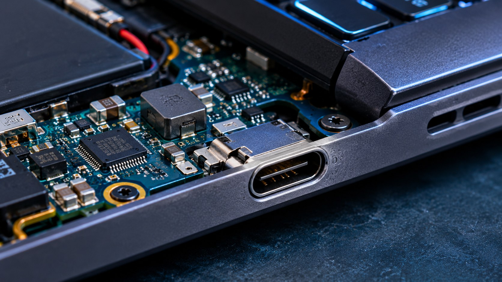
USB-C / POWER DELIVERYDiagnostyka zasilania
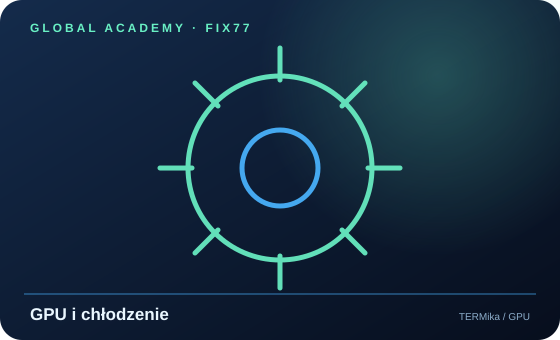
GPU / CHŁODZENIE
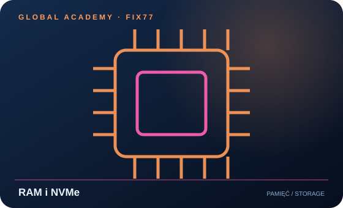
RAM / DIMM · SO-DIMM
36 ILUSTRACJI TECHNICZNYCH · BEZ POSTACIDIAGNOSTYKA I NAPRAWAUSB-C · GPU · RAM DIMM / SO-DIMM
NOWOŚĆ · FIX168–FIX175
Akademia Mistrza Serwisu
Windows Rescue, demontaż laptopów, odzyskiwanie danych, sterowniki, diagnostyka zasilania i egzamin praktyczny. Wszystko w jednym warsztacie szkoleniowym.
8 LABORATORIÓW5 NARZĘDZIEGZAMIN MISTRZA
NAJPIERW ZOBACZ • POTEM NAUCZ SIĘ WYKONYWAĆ
Naprawiaj. Odkrywaj. Ucz się od A do Z.
Każdy slajd ma własną, lokalną ilustrację techniczną przedstawiającą wyłącznie sprzęt, podzespoły i schematy. Grafiki są zapisane w projekcie i dostępne offline; nie pokazują ludzi.
GALERIA EDUKACYJNA
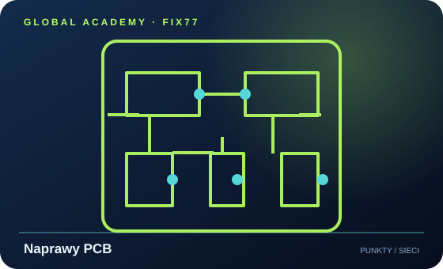
01 / NAPRAWY PCB
Znajdź usterkę na płycie głównej.
Rozpoznawaj elementy, analizuj objawy, poznawaj kolejność pomiarów i ucz się potwierdzać przyczynę awarii.
FOTOGRAFIA SPRZĘTU · ŁADOWANIE
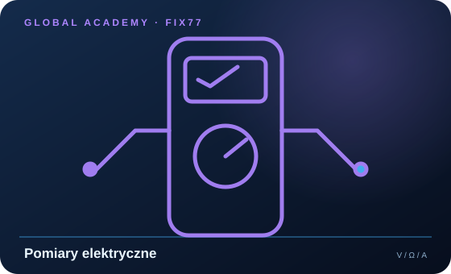
02 / DIAGNOSTYKA I POMIARY
Ucz się mierzyć, nie zgadywać.
Ćwicz napięcie, rezystancję, ciągłość i interpretację wyników w laboratorium edukacyjnym.
FOTOGRAFIA SPRZĘTU · ŁADOWANIE
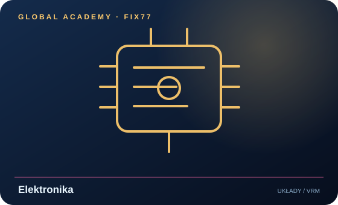
03 / ELEKTRONIKA OD PODSTAW
Poznaj każdy element i jego rolę.
Rezystory, kondensatory, MOSFET-y, cewki, kontrolery, linie zasilania i zależności między układami.
FOTOGRAFIA SPRZĘTU · ŁADOWANIE
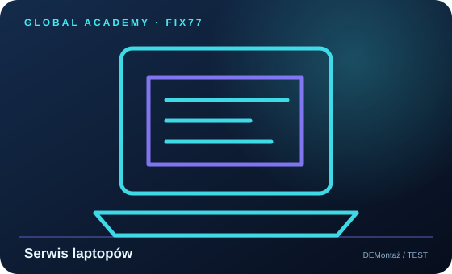
04 / SERWIS LAPTOPÓW
Od demontażu do testu końcowego.
Ćwicz bezpieczny demontaż, czyszczenie chłodzenia, wymianę RAM i SSD oraz kontrolę po naprawie.
FOTOGRAFIA SPRZĘTU · ŁADOWANIE
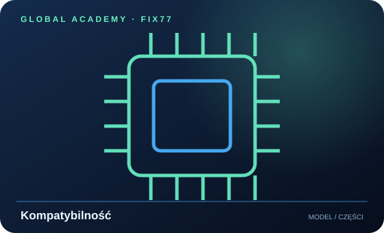
05 / PODZESPOŁY I MODELE
Rozpoznawaj części i dobieraj zamienniki.
Porównuj pamięci, dyski, procesory, układy i numery płyt. Ucz się weryfikować zgodność przed wymianą.
FOTOGRAFIA SPRZĘTU · ŁADOWANIE
06 / NAUKA I ROZWÓJ
Od pierwszej lekcji do samodzielnej diagnozy.
Buduj plan nauki, rozwiązuj przypadki, sprawdzaj wiedzę i rozwijaj umiejętności w swoim tempie.
FOTOGRAFIA SPRZĘTU · ŁADOWANIE
01 / 06
EDUKACJA • PRAKTYKA • ROZWÓJ
Cała akademia w jednym miejscu.
Wybierz jeden z 19 modułów. Karty pokazują prawdziwe fotografie komputerów, podzespołów i elektroniki. Katalog odrzuca materiały oznaczone jako zdjęcia ludzi, dłoni, twarzy i grup; lokalne ilustracje pozostają awaryjnym trybem offline.
FIX131: zdjęcia sprzętu przez serwer projektu — bez osób i dłoni…
ROZSZERZ SWÓJ WARSZTAT
Specjalizacje serwisowe PRO.
Sześć ścieżek prowadzi do istniejących kursów, atlasów, procedur i narzędzi Akademii.
Kontrola ilustracji technicznych FIX122
Grafiki strony głównej są lokalnymi plikami SVG. Nie są pobierane zdjęcia zewnętrzne; ilustracje przedstawiają wyłącznie sprzęt, podzespoły i schematy. Grafiki lokalne — tryb offline
36/36 lokalnych ilustracji technicznych · bez postaci
TWÓJ RYTM NAUKI
Małe kroki. Rzeczywiste umiejętności.
Zaznacz etapy, które dziś zrealizowałeś. Postęp zapisuje się lokalnie w tej przeglądarce.
0 / 3 etapów
NAUKA DLA KAŻDEGO / OD PODSTAW DO EKSPERTA
Wybierz swoją ścieżkę nauki.
Nie musisz znać się na wszystkim. Wybierz temat, zacznij od podstaw i rozwijaj umiejętności krok po kroku.
ULTIMATE LEARNING LAB / 6.0
Wszystko do nauki w jednym miejscu.
Wybieraj tematy, ucz się we własnym tempie i przechodź od prostych zagadnień do praktycznych umiejętności.
PLATFORMA NAUKI / GOTOWA
STATYSTYKI Z ISTNIEJĄCEJ BAZY D1
—Wizyty / sesje—Unikalne sesje—Odsłony—Konta i profile
TWOJA ŚCIEŻKA NAUKIPostęp zapisany lokalnie
NOWE MATERIAŁY
Ostatnie lekcje warsztatowe
ULTIMATE KNOWLEDGE CENTER / 6.1
Centrum wiedzy i postępów serwisanta.
Rzeczywiste liczniki katalogu i D1, najnowsze lekcje oraz szybkie przejście do mapy wiedzy. Statystyki globalne pojawiają się po odpowiedzi serwera.
LEKCJE W KATALOGU—unikalne materiały po załadowaniu pakietówODWIEDZINY / SESJE—istniejące API D1ODSŁONY—istniejące API D1MODELE REFERENCYJNE—— producentów
Najnowsze lekcje warsztatowe
Szybkie stanowiska
CENTRUM SZKOLENIOWE / LIVE LAB
Wybierz technologię i przejdź do praktyki
NAUKA OD A DO Z ONLINE
▶
Praktyczna lekcja wideoFILM SZKOLENIOWY / POLSKA NARRACJA
4K LAB
8+ autorskich filmów lokalnych
⌘
Interaktywna płyta głównaKLIKNIJ OBSZAR, ABY POZNAĆ ELEMENT
PCB MAP
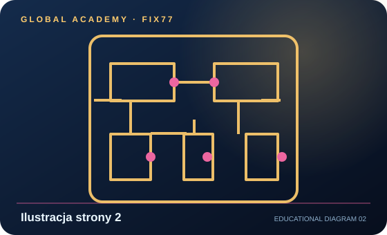
Mapa poglądowa — lokalizacje zależą od rewizji PCB
ULTRA SERVICE CENTER / WORKSPACE
Twoje centrum pracy.
Jedno miejsce do nauki, diagnostyki, dokumentowania i wyszukiwania modeli PC oraz laptopów.
SYSTEM GOTOWY
NAUKA OD A DO Z W LICZBACH / STATYSTYKI GLOBALNE
Wiedza, która rośnie każdego dnia.
Liczby ze wspólnej bazy platformy i katalogów tej wersji.
ŁĄCZENIE Z LICZNIKIEM
WIZYTY / SESJE—zarejestrowane sesje odwiedzającychUNIKALNE SESJE—różne anonimowe identyfikatory sesjiODSŁONY STRONY—wywołania stron i sekcjiWIZYTY DZISIAJ—bieżący dzień UTCOSTATNIE 7 DNI—sesje w ciągu siedmiu dniAKTYWNE PROFILE / 30 DNI—profile z aktywnością w ostatnich 30 dniachKONTA I PROFILE—utworzone profile platformyKONTA E-MAIL—konta z logowaniem na wielu urządzeniachLEKCJE UKOŃCZONE—zsynchronizowane zaliczeniaPRZYPADKI NAPRAW—zatwierdzone wpisy społecznościMODELE ZATWIERDZONE—dokładne wpisy katalogu społecznościMODELE W MODERACJI—materiały edukacyjne oczekujące na sprawdzenieWIZYTY / MIESIĄC—zarejestrowane sesje w bieżącym miesiącuODSŁONY DZISIAJ—załadowane widoki dzisiajODSŁONY / 7 DNI—załadowane widoki w ostatnim tygodniuUCZNIOWIE Z POSTĘPEM—profile z zapisanym postępem w chmurzeOTWARCIA LEKCJI—zdarzenia z dobrowolnej synchronizacjiODTWORZENIA WIDEO—zdarzenia z dobrowolnej synchronizacjiZALICZENIA / ZDARZENIA—ukończenia z dobrowolnej synchronizacji
Statystyki globalne ładują się z istniejącej bazy D1. Wizyty są liczone jako anonimowe sesje przeglądarki, a nie identyfikacja konkretnych osób.
WYBIERZ OBSZAR SZKOLENIA
Co naprawiamy dzisiaj?
Przejdź bezpośrednio do części, technologii lub stanowiska pracy.
LAB / 01—06
STANOWISKA I WYPOSAŻENIE
Warsztat, nie tylko teoria.
Poznaj narzędzia, ustawienia, technikę pracy i typowe błędy początkujących.
INTERAKTYWNA BAZA KOMPONENTÓW
Rozpoznaj część. Zrozum jej rolę na płycie.
Rezystory, kondensatory, cewki, MOSFET-y, układy PWM, kontrolery USB-C, pamięci VRAM, kości BIOS, układy EC i złącza. Każdy element powinien mieć opis działania, oznaczenie na schemacie, objawy uszkodzenia i sposób sprawdzenia.
ŚCIEŻKI NAUKI
Od podstaw do napraw BGA
PROGRAM
TWOJE POSTĘPY
Kontynuuj naukę
0%
Ukończone lekcje i checklisty zapisują się w tej przeglądarce.
0 zadań ukończonych
PRACOWNIA EDUKACYJNA / 155 STUDIÓW PRZYPADKÓW
Każda usterka to osobna lekcja.
Analizuj objawy, poznawaj przyczyny i ucz się diagnozowania krok po kroku. To baza wiedzy i ćwiczeń, nie formularz zgłoszeń.
155instrukcji serwisowych
⌕
155 materiałów edukacyjnychKażda usterka otrzymuje trzy własne ilustracje techniczne offline. Licencjonowane fotografie online są dodatkiem; brak zdjęcia nie zostawia pustego pola.
NAUKA OD A DO Z — DLA WSZYSTKICH 4.0
Szkoła napraw komputerów, laptopów i elektroniki.
Od podstaw elektroniki i pomiarów, przez diagnostykę płyt, socketów, CPU, GPU i VRAM, aż po lutowanie SMD/BGA, testy i dokumentację serwisową.
1083 lekcji serwisowych · filmy lokalne · checklisty · procedury A–Z
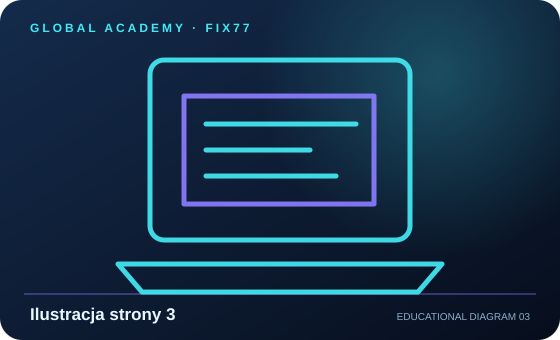
LAB / 4K REPAIR SCHOOL
NAUKA OD A DO Z WIEDZY
Ucz się od podstaw. Rozwijaj warsztat.
Materiał podzielony na ścieżki od podstaw po zaawansowany warsztat. Każda lekcja zawiera objawy, tok diagnostyczny, checklistę, rozwiązania, test końcowy, ostrzeżenia i ilustracje.
1 075lekcji, tematów i rozdziałów szkoleniowych
⌕
27 materiałów
KNOWLEDGE GRAPH / 18 OBSZARÓW
Mapa całej wiedzy serwisowej.
Wybierz dziedzinę albo wyszukaj konkretny problem. Liczby i lista tematów są obliczane z rzeczywistego katalogu lekcji. Materiały ogólne nie zastępują dokumentacji producenta dla konkretnego modelu i rewizji PCB.
OBSZARY NAUKI
Wybierz temat szkolenia
—
MATERIAŁY W KATALOGU
Lekcje i procedury
Otwórz materiał, aby zobaczyć pełne omówienie, kroki i test.
SCHEMATY / BOARDVIEW / ELEKTRONIKA
Encyklopedia elementów i oznaczeń.
Wyszukuj nazwy polskie i angielskie, oznaczenia na schematach, objawy, metody pomiaru i sposoby serwisowania. Obejmuje elementy SMD/THT, układy zasilania, pamięci, interfejsy, złącza, linie i symbole.
292typów elementów i linii
⌕
292 pozycjiWybierz pozycję, aby zobaczyć opis, objawy, diagnostykę, naprawę i ograniczenia.
!
Uwaga na oznaczenia i pomiary
Oznaczenia R/C/Q/U/PQ/PU/PL i nazwy linii są zależne od schematu producenta. Nie zakładaj uniwersalnego pinoutu, napięcia lub polaryzacji. Przed pomiarem zidentyfikuj dokładny model i rewizję płyty.
WARSZTAT / NARZĘDZIA I OPROGRAMOWANIE
Pełny katalog narzędzi serwisowych.
Narzędzia fizyczne i programowe, ich zastosowanie, procedura użycia, ograniczenia, kompatybilne urządzenia i źródła producentów. Wybieraj wyposażenie do konkretnego pomiaru — nie kupuj przypadkowego zestawu.
161pozycji katalogu
⌕
161 narzędziWybierz narzędzie, aby zobaczyć zastosowanie i bezpieczny sposób użycia.
PROCEDURY / METODY / OBSŁUGIWANE URZĄDZENIA
Metody napraw od diagnostyki po odbiór.
Wybierz metodę, aby przejść przez diagnozę, działanie, kontrolę końcową i ryzyka. Poniżej znajduje się macierz sprzętu objętego kursem.
147metod serwisowych
⌕
147 metodNie każda metoda pasuje do każdej rewizji sprzętu — sprawdź dokumentację OEM.
Zdjęcia 147 metod będą pobierane dla widocznych kart. Ilustracje SVG są wyłącznie oznaczonym zastępstwem.
MACIERZ URZĄDZEŃ
Jakie urządzenia poznasz?
Zakres diagnostyki zależy od modelu i dokumentacji producenta.
NAUKA OD A DO Z›DIAGNOSTYKA›PROCEDURY I MATERIAŁY
CENTRUM DIAGNOSTYKI / PC • LAPTOP • PODZESPOŁY
Diagnostyka komputerów i laptopów.
Wybierz konkretny obszar pomiaru. Każdy materiał otwiera pełną procedurę, objawy, pomiary, naprawę i test końcowy.
12najważniejszych ścieżek diagnostycznych
12 materiałów
MATERIAŁY DO DIAGNOSTYKI
Przewodniki i mapy
!
Prace przy zasilaniu i bateriach
Nie otwieraj zasilaczy sieciowych. Nie zwieraj bezpieczników, nie omijaj zabezpieczeń i nie wykonuj pomiarów pod napięciem bez kwalifikacji, schematu i właściwego wyposażenia.
BIBLIOTEKA EDUKACYJNA / FOTOGRAFIE I FILMY
Ucz się na prawdziwych naprawach.
Krótkie wprowadzenia, dłuższe szkolenia online, prawdziwe fotografie warsztatowe i rozdziały tematyczne. Materiały zewnętrzne są opisane językiem, czasem i źródłem.
10+autorskich wprowadzeń oraz pełne kursy online
GALERIA ZDJĘĆ
Podzespoły i stanowisko serwisowe
Wybierz zdjęcie, aby powiększyć je w platformy.
KRÓTKIE WPROWADZENIA AUTORSKIE
Najpierw poznaj podstawy.
Krótkie, lokalne materiały z polską narracją. Są wstępem do pełniejszych kursów poniżej.
PEŁNE SZKOLENIA WIDEO ONLINE
Poświęć tematowi więcej czasu.
12 dłuższych materiałów od praktyków: diagnoza prawdziwych przypadków, analiza pomiarów, lutowanie, elektronika podstawowa i naprawy płyt. Otwierasz oryginalne nagranie u wydawcy; nie udajemy, że jest to film hostowany przez Akademię.
12 SZKOLEŃ · 23 MIN – 3 H 48 MIN
Linki prowadzą do bezpłatnych materiałów udostępnionych przez ich wydawców. Większość jest po angielsku; w opisie znajdziesz polskie objaśnienie zakresu. Dostępność filmu i napisy zależą od oryginalnego serwisu.
CENTRUM PLIKÓW
Biblioteka serwisowa.
Podręczniki, kursy, atlasy, checklisty, ćwiczenia i źródła. PDF-y można przeglądać wewnątrz platformy. Pliki Office można pobrać bez otwierania nowej karty.
30plików i źródeł w bibliotece
⌕
KONTROLA JAKOŚCI PRACY
Checklisty serwisowe.
Przejdź kolejne punkty i odhaczaj dopiero po wykonaniu czynności. Zaznaczenia zapisywane są lokalnie.
51arkuszy serwisowych
INDEKS 880 STRON
Szukaj wewnątrz podręczników.
Wyszukiwarka tekstu odczytanego z załączonych dokumentów PDF. Wynik wskazuje nazwę pliku i numer strony.
880zaindeksowanych stron PDF
⌕
Wyszukiwanie działa lokalnie w przeglądarce. Nie wysyła zapytań ani dokumentów na zewnętrzny serwer.
WIEDZA Z SIECI / OFICJALNE DOKUMENTY
Źródła online i aktualne narzędzia.
Biblioteka prowadzi bezpośrednio do dokumentacji Microsoft, producentów sprzętu, narzędzi diagnostycznych i zasad bezpieczeństwa. Linki prowadzą do właścicieli oprogramowania — nie do przypadkowych mirrorów.
182oficjalnych źródeł online
Biblioteka: 182 oficjalne źródła do dokumentacji i pobierania
Wydania Preview są opcjonalne i nie należy instalować ich masowo na komputerach klientów. Przed aktualizacją sprawdź dokładną gałąź Windows, model sprzętu, znane problemy, kopię danych oraz możliwość wycofania zmiany. Aktualność wpisów potwierdzaj bezpośrednio na stronach wydawców.
WINDOWS 11 / PREVIEWKB5127936 · 28.10.2026 · 25H2/26H2
Podgląd jakościowy. Zawiera m.in. poprawę obsługi PIN BitLocker i znany problem wybranych urządzeń USB Audio Class 1.0: Code 10 lub brak dźwięku. Nie wdrażaj jako obowiązkowej poprawki.
Certyfikaty używane w Secure Boot zaczęły wygasać w czerwcu 2026 r. Sprawdź stan urządzenia i instrukcję OEM; nie wymuszaj ręcznego flashowania certyfikatów bez procedury producenta.
Oficjalne wydanie zawiera m.in. test magistrali, RowHammer, wykrywanie SPD i obsługę ARM64. Kompilacje nightly są eksperymentalne; do serwisu wybierz stabilne wydanie.
Sprawdź stabilną i testową wersję na stronie autora. W serwisie komercyjnym zweryfikuj licencję — darmowa edycja nie oznacza automatycznie bezpłatnego zastosowania komercyjnego.
182 źródłaŹródła bezpośrednio od producentów i organizacji technicznych.
GOOGLE GEMINI · WYŁĄCZNIE SERWIS I NAUKA KOMPUTERÓW
Asystent AI serwisanta.
Rozmawiaj naturalnie, wracaj do wcześniejszych pytań i diagnozuj komputery krok po kroku. Nauczyciel korzysta wyłącznie z Google Gemini. Odpowiada tylko na pytania dotyczące nauki, diagnostyki, naprawy i konserwacji komputerów oraz laptopów. Korzysta też z zatwierdzonej wiedzy platformy.
GEMINInauczyciel serwisu PC
PC
platforma · asystent AI serwisantaSprawdzam Google Gemini…
GOTOWY
1 Podaj dokładny model 2 Opisz objawy 3 Dodaj wyniki testów
✦
Od czego zaczynamy?
Opisz urządzenie, dokładny model, rewizję płyty, objawy i wykonane testy. Poprowadzę Cię przez hipotezy, bezpieczne kontrole i kryteria potwierdzenia usterki.
Diagnostyka krok po krokuŹródła i odnośnikiHistoria po zgodzie
Nie wklejaj haseł, kluczy BitLocker, numerów seryjnych klientów ani danych osobowych.
WSPÓLNA BAZA / MODEROWANE PRZYPADKI
Wiedza społeczności.
Użytkownicy mogą dodawać rozwiązane przypadki wyłącznie jako materiały edukacyjne. Materiały trafiają do moderacji, a do wspólnej bazy wiedzy dopiero po weryfikacji administratora. Platforma nie przyjmuje zleceń ani zgłoszeń napraw od klientów.
RAGwiedza zatwierdzona
Nie dodawaj danych klientów. Usuń nazwiska, adresy, e-maile, numery seryjne, klucze BitLocker, hasła, numery zamówień i inne dane pozwalające kogoś zidentyfikować. Dodawaj wyłącznie materiały, do których publikacji masz prawo.
COMMUNITY HARDWARE REGISTER / PC & LAPTOP
Marki, modele i płyty główne.
Przeglądaj rodziny laptopów i komputerów różnych producentów. Dokładne wpisy społeczności z numerem płyty i rewizją są publikowane po moderacji.
Katalog producentówrodziny + wpisy serwisowe
Rodziny produktowe są orientacyjne. Dokładny wariant potwierdź na etykiecie urządzenia i nadruku PCB.
Ładowanie katalogu producentów…
DODAJ DO WSPÓLNEJ BAZY
Wprowadź dokładny model i oznaczenie płyty
Dodaj informacje o modelu, platformie, numerze PCB, rewizji, znanych usterkach i legalnych źródłach dokumentacji. Każdy wpis czeka na moderację.
Zaloguj się lub utwórz konto, aby dodać model.
OTWARTA WIEDZA / PROFIL AUTORA
Dodaj materiał edukacyjny do wspólnej wiedzy
Możesz utworzyć szybki profil pseudonimowy albo pełne konto e-mail i hasło. Pełne konto pozwala zalogować się na innym urządzeniu. Każdy materiał edukacyjny trafia najpierw do moderacji. To miejsce służy wyłącznie wymianie wiedzy, nie przyjmowaniu zleceń napraw. Synchronizacja historii nauki pozostaje osobną, dobrowolną zgodą.
Profil pseudonimowy działa w tej przeglądarce. Pełne konto e-mail + hasło umożliwia logowanie na innych urządzeniach.
Lub zaloguj się bezpiecznie
Sprawdzam dostępność logowania…
DODAJ MATERIAŁ EDUKACYJNY
Dodaj opis rozwiązanej usterki do bazy wiedzy
MODERACJA
Autor:—Materiał edukacyjny trafi do moderacji — to nie jest formularz kontaktu ani zlecenie naprawy.
BAZA ZATWIERDZONA
Materiały edukacyjne zweryfikowane przez administratora
Nie są zamiennikiem dokumentacji producenta. Sprawdź model i rewizję przed użyciem procedury.
Ładowanie zatwierdzonych przypadków…
HISTORIA / SYNCHRONIZACJA / PRYWATNOŚĆ
Moja nauka i aktywność.
Włącz dobrowolną synchronizację, aby zapisywać działania, historię lekcji, pytania czatu i postęp w bazie platformy. Profil jest pseudonimowy i przypisany do bieżącej przeglądarki.
LOKALNIEstan synchronizacji
Przejrzyste zasady: profil autora można założyć samym pseudonimem. Logowanie Google, Microsoft, Facebook, GitHub lub Discord pozwala odzyskać konto na innym urządzeniu po skonfigurowaniu wybranego dostawcy. Synchronizacja historii nauki jest osobną, dobrowolną zgodą — samo logowanie nie włącza zapisu historii.
KONTO TECHNIKA / TWOJA PRZESTRZEŃ ROZWOJU
Twoje konto w platformy.
Załóż bezpłatne konto e-mail i hasło, aby logować się na różnych urządzeniach, dodawać modele do katalogu i zachować swój profil serwisanta. Synchronizacja historii nauki pozostaje osobną, dobrowolną zgodą.
01
Jedno kontoLogowanie na komputerze i laptopie
02
Ochrona hasłaPBKDF2-HMAC-SHA256 i unikalna sól
03
Wspólna wiedzaZgłaszanie modeli i przypadków do moderacji
04
Twoja decyzjaHistoria w chmurze tylko po osobnej zgodzie
i
Ważne: Potwierdzanie adresu i reset hasła działają po skonfigurowaniu usługi pocztowej Resend. Logowanie Google, Microsoft, Facebook, GitHub i Discord wymaga osobnych kluczy dostawców oraz wdrożenia zgodnej wersji strony i API. Sprawdź status każdej metody w panelu logowania poniżej.
⌑SECURE ACCOUNT
PBKDF2
2FA TOTP
D1 SESSION
* 2FA można włączyć po zalogowaniu w ustawieniach konta.
Sprawdzam połączenie z serwerem kont…Weryfikuję dostępność API i istniejącej bazy platformy.
Jesteś zalogowanyHistoria nauki jest synchronizowana tylko po odrębnej zgodzie.
DOSTĘP DO PLATFORMY
Rejestracja lub logowanie
E-MAIL LUB LOGOWANIE ZEWNĘTRZNE
ODZYSKIWANIE KONTA
Wyślij link do resetu hasła
Jeśli konto istnieje, wyślemy wiadomość z jednorazowym linkiem. Odpowiedź nie ujawnia, czy dany adres jest zarejestrowany.
USTAWIANIE NOWEGO HASŁA
Wprowadź nowe hasło
Link jest jednorazowy i wygasa po 30 minutach. Po zmianie hasła wszystkie wcześniejsze sesje zostaną wylogowane.
DODATKOWA WERYFIKACJA
Potwierdź logowanie kodem 2FA
Wpisz sześciocyfrowy kod z aplikacji uwierzytelniającej albo jednorazowy kod odzyskiwania.
Sprawdzanie dostępności kont…
🔒
Hasło nie jest przechowywane w jawnej postaci. Serwer zapisuje skrót PBKDF2-HMAC-SHA256 z unikalną solą. Nie wysyłaj hasła ani kluczy odzyskiwania do czatu platformy.
OTWARTA BAZA WIEDZY
Dodaj własną sprawdzoną naprawę
Nie potrzebujesz konta Google ani synchronizacji nauki. Wystarczy pseudonim 3–32 znaki. Każdy wpis przechodzi moderację przed publikacją.
TWÓJ PROFIL
Synchronizacja historii nauki
Profil pseudonimowy jest aktywny. Synchronizacja historii nauki pozostaje wyłączona do czasu osobnej zgody.
Identyfikator:
Pseudonim:
E-mail konta:
Brak oczekujących zmian synchronizacji.
Połączone metody logowania
Dodaj więcej niż jeden sposób dostępu. Nie odłączaj ostatniej metody, zanim dodasz inną.
Ładowanie metod logowania…
Aktywne sesje i urządzenia
Możesz sprawdzić datę utworzenia i ważność sesji. Nie zapisujemy odcisku urządzenia ani adresu IP w tej liście.
Ładowanie sesji…
Historia bezpieczeństwa konta
Ostatnie logowania, zmiany 2FA i wylogowania innych urządzeń. Nie pokazujemy adresów IP ani surowych danych urządzenia.
Ładowanie historii…
Potwierdzenie adresu e-mail
Weryfikacja potwierdza dostęp do skrzynki. Link jest jednorazowy i wygasa po 30 minutach.
Sprawdzam usługę pocztową…
Weryfikacja dwuetapowa (2FA)
Dodaj kod z aplikacji uwierzytelniającej. Sekret jest szyfrowany po stronie serwera; kody odzyskiwania pokażemy tylko raz.
Sprawdzam ustawienia 2FA…
W aplikacji wybierz dodanie konta kluczem ręcznym, algorytm SHA1, 6 cyfr i okres 30 sekund.
Kody odzyskiwania — zapisz teraz
OSTATNIE DZIAŁANIA
Historia w platformy
Historia lokalna pozostaje na tym urządzeniu. Włącz synchronizację, aby zapisywać ją w chmurze.
BEZPIECZEŃSTWO POSTĘPÓW
Kopia postępu nauki i notatek
Przenieś ukończone lekcje, checklisty, ćwiczenia laboratoryjne i własne notatki na inny komputer. Import łączy postęp, zamiast usuwać istniejące wpisy.
LOKALNA KOPIA JSON
Odczytuję lokalny postęp…
Kopia obejmuje wyłącznie wskazane dane edukacyjne. Nie zawiera haseł, tokenów, danych logowania ani rozmów z asystentem. Zachowaj pobrany plik w bezpiecznym miejscu.
FIX231–FIX239 · TWOJE USTAWIENIA
Centrum powiadomień, dostępności i prywatności
Powiadomienia
Ogłoszenia, zadania, oddane prace i oceny są widoczne w skrzynce platformy. E-mail i Web Push działają po konfiguracji usług po stronie serwera.
Zaloguj się, aby pobrać powiadomienia.
Język interfejsu
Wybierz język kontrolek i głównych elementów nawigacji. Treści lekcji używają dostępnych tłumaczeń PL/EN.
Dostępność
Ustawienia działają lokalnie w tej przeglądarce.
Opiekun / rodzic — udostępnianie postępów
Uczeń generuje jednorazowy kod, opiekun wysyła prośbę, a uczeń musi ją zatwierdzić. Opiekun widzi wyłącznie zagregowany postęp, wyniki egzaminów i liczbę certyfikatów.
Lista połączeń zostanie pobrana po zalogowaniu.
Moje materiały offline
Zapisuje lokalną, tekstową kopię aktualnie otwartego materiału. Nie zapisuje sesji logowania, sekretów, odtwarzaczy ani chronionych treści z API.
Zgłoś błąd materiału
Zgłoszenie trafia do ręcznej moderacji. Nie zmienia lekcji automatycznie. Nie wklejaj haseł, kluczy API ani danych klientów.
PANEL OPIEKUNA WIEDZY
Moderowanie przypadków społeczności
Dostęp wymaga tajnego tokenu ADMIN_REVIEW_TOKEN ustawionego po stronie serwera. Token nie jest zapisywany w przeglądarce.
Moderowanie modeli laptopów i komputerów
Wpisz ten sam token administratora i pobierz kolejkę modeli.
FIX209 · KONTROLA SYSTEMU
Centrum stanu platformy
Wykorzystuje ten sam token administratora co moderacja powyżej. Pokazuje wyłącznie status konfiguracji, bez ujawniania sekretów i danych kont.
Kontrola nie została jeszcze uruchomiona.
FIX222 · BANK PYTAŃ PRO
Zarządzanie pytaniami egzaminacyjnymi
Dostęp wymaga tego samego tokenu administratora. Pytania dodane tutaj trafiają do serwerowego losowania egzaminu. Pytania wbudowane pozostają niezmienione.
Bank nie został jeszcze odczytany.
ROZWÓJ / UTRZYMANIE / DOKUMENTACJA
Wesprzyj platformę.
Dobrowolne wsparcie pomaga rozwijać bezpłatne materiały, procedury diagnostyczne, bazę wiedzy i utrzymywać platformę online. Dostęp do treści nie zależy od wpłaty.
♥wsparcie dobrowolne
DLACZEGO WARTO WSPIERAĆ PLATFORMĘ?
Pomóż rozwijać bezpłatną szkołę serwisu PC.
platforma powstaje po to, aby wiedza o naprawie komputerów i laptopów była dostępna także dla osób, które dopiero uczą się zawodu. Wsparcie pomaga utrzymać stronę i bazę materiałów oraz tworzyć kolejne lekcje i nagrania.
01 / LEKCJEWięcej praktycznej wiedzyNowe procedury, ćwiczenia i egzaminy krok po kroku.02 / WIDEOWięcej filmów z warsztatuPokazy napraw, pomiarów, lutowania i kontroli jakości.03 / KATALOGWięcej marek i modeliRozwijanie katalogu urządzeń, płyt i przypadków serwisowych.04 / UTRZYMANIEStabilna platforma onlineHosting, kopie bezpieczeństwa, rozwój i dostępność materiałów.
01Dobrowolność
Sam decydujesz, czy i kiedy wspierasz platformę.
02Bezpłatna nauka
Wpłata nie blokuje ani nie odblokowuje żadnej lekcji.
03Równe zasady
Wsparcie nie daje przewagi w egzaminach ani moderacji.
Dostęp do lekcji pozostaje bezpłatny. Wpłata nie daje dodatkowych przywilejów, nie wpływa na moderację i jest całkowicie dobrowolna.
FILM / 00:33Dlaczego warto rozwijać bezpłatną platformę?
Polskie napisy są opcjonalne — włączysz je przyciskiem CC w odtwarzaczu. Film domyślnie pokazuje czysty obraz bez napisów zasłaniających treść.
Przeczytaj tekst narracji filmu
Nauka od A do Z — Dla Wszystkich to bezpłatna platforma edukacyjna o komputerach, elektronice i technice.
Tworzymy nowe lekcje, filmy instruktażowe, dokumentację warsztatową i katalogi modeli.
Dobrowolne wsparcie pomaga utrzymywać stronę, rozwijać laboratorium i nagrywać kolejne materiały.
Rozbudowujemy bazę wiedzy, dodajemy ćwiczenia i nowe procedury serwisowe.
Każda wpłata jest dobrowolna. Nauka pozostaje bezpłatna dla wszystkich.
Dziękujemy, że pomagasz rozwijać platformę!
Film został przebudowany z sześciu ujęć opartych na lokalnych ilustracjach technicznych i sprzęcie komputerowym, bez widocznych osób. Oryginalna ścieżka narracji została zachowana, a polskie napisy pozostają opcjonalne.
CO WSPÓLNIE ROZWIJAMY
Twoje wsparcie zamienia się w konkretne materiały.
Nie sprzedajemy dostępu do wiedzy. Dobrowolne wpłaty pomagają utrzymywać i rozwijać otwartą platformę dla osób uczących się napraw komputerów, laptopów i elektroniki.
▤
01 / WIEDZA
Więcej lekcji i ćwiczeń
Rozbudowa kursów krok po kroku, procedur diagnostycznych, testów, egzaminów i materiałów dla początkujących oraz zaawansowanych.
▶
02 / WIDEO
Filmy z warsztatu
Nagrania pokazujące pomiary, demontaż, czyszczenie, chłodzenie, naprawy płyt, lutowanie i kontrolę końcową — z polskimi napisami.
▦
03 / DOKUMENTACJA
Marki, modele i części
Większy katalog urządzeń, oznaczeń płyt, podzespołów, typowych usterek oraz odnośników do legalnie dostępnej dokumentacji producentów.
⚗
04 / LABORATORIUM
Ćwiczenia praktyczne
Rozwijanie interaktywnych symulatorów, wirtualnych stanowisk, checklist, zadań praktycznych i narzędzi szkoleniowych.
☁
05 / DOSTĘPNOŚĆ
Utrzymanie platformy online
Hosting, transfer danych, kopie bezpieczeństwa, testy działania, poprawki bezpieczeństwa i dostęp do materiałów także na telefonie.
✧
06 / JAKOŚĆ
Poprawki i rozwój
Naprawianie błędów, aktualizowanie treści, poprawa dostępności, wydajności i wygody korzystania z platformy.
Uczciwie i bez obietnic bez pokrycia: koszty utrzymania i zakres prac zmieniają się w czasie. Nie przypisujemy każdej wpłacie sztucznego procentowego podziału ani nie gwarantujemy konkretnej liczby nowych publikacji. Wsparcie jest przeznaczane na utrzymanie i rozwój platformy, a postęp prac pokazujemy w kolejnych aktualizacjach.
MOŻESZ POMÓC TAKŻE BEZ WPŁATY
Twoja wiedza i materiały edukacyjne też mają znaczenie.
Dodaj sprawdzony model urządzenia, opisz rozwiązany przypadek jako materiał do nauki, wskaż błąd w lekcji albo poleć platformę osobie uczącej się elektroniki.
PRIORYTETY ROZWOJU
Co chcemy rozwijać w następnej kolejności?
To obszary, na które kierujemy uwagę podczas planowania kolejnych prac. Kolejność może się zmieniać zależnie od potrzeb, bezpieczeństwa i dostępnych zasobów.
PLAN / PRO
01 / NAUKA
Więcej pełnych ścieżek kursowych
Od podstaw elektroniki i diagnostyki po zaawansowane naprawy płyt, zasilania, BIOS/UEFI, GPU i pamięci.
LEKCJE · PROCEDURY · EGZAMINY02 / PRAKTYKA
Rozbudowa laboratoriów
Więcej ćwiczeń z miernikiem, oscyloskopem, zasilaczem, diagnostyką zwarć i analizą typowych usterek.
SYMULATORY · STANOWISKA · CHECKLISTY03 / URZĄDZENIA
Dokładniejszy katalog modeli
Rodziny laptopów i komputerów, oznaczenia płyt, rewizje, warianty obsadzenia oraz odnośniki do źródeł producentów.
MODELE · BOARD ID · ŹRÓDŁA04 / WIDEO
Filmy z realnego warsztatu
Pokazy kolejnych etapów diagnozy, pomiarów, czyszczenia, demontażu, lutowania i kontroli po naprawie.
WARSZTAT · NAPISY · TRANSKRYPCJE05 / JAKOŚĆ
Testy i kontrola materiałów
Sprawdzanie kompletności lekcji, linków, zdjęć, ćwiczeń, nawigacji i poprawności działania kolejnych modułów.
REGRESJA · DOSTĘPNOŚĆ · POPRAWKI06 / DOSTĘPNOŚĆ
Wygodniejsze korzystanie na telefonie
Czytelniejsze formularze, lepsze skalowanie tabel, sterowanie dotykowe i zachowanie najważniejszych funkcji na małych ekranach.
MOBILE · RESPONSYWNOŚĆ · UX07 / BEZPIECZEŃSTWO
Utrzymanie i kopie zapasowe
Aktualizacje zależności, kontrola uprawnień, kopie danych, ochrona kont i sprawdzanie procesu publikacji.
HOSTING · BACKUP · OCHRONA08 / SPOŁECZNOŚĆ
Więcej wiedzy od praktyków
Rozwijanie katalogu przypadków edukacyjnych, zgłoszeń poprawek i materiałów dodawanych po moderacji.
WSPÓŁPRACA · MODERACJA · ŹRÓDŁA
Bez pustych obietnic: lista nie jest harmonogramem ani gwarancją daty publikacji. Priorytety mogą się zmienić, a nowe materiały przechodzą kontrolę merytoryczną i prawną.
CO JUŻ JEST DOSTĘPNE
Platforma to nie tylko plan — możesz korzystać już teraz.
Wsparcie pomaga utrzymywać i rozwijać istniejące zasoby, a nie tylko tworzyć nowe pomysły.
DOSTĘPNE
1060lekcji i materiałów edukacyjnych
Wiedza od podstaw po procedury i zagadnienia zaawansowane.
12kart diagnostycznych
Praktyczne obszary do ćwiczenia diagnozy i interpretacji objawów.
18dziedzin mapy wiedzy
Powiązane obszary pomagające przechodzić od podstaw do kolejnych tematów.
1wspólna platforma
Kursy, narzędzia, katalogi, laboratoria i społeczność w jednym miejscu.
01 / NAWIGACJAOddzielne moduły
Każda główna część platformy ma własny widok, a przejścia między modułami są kontrolowane.
02 / MATERIAŁYRóżne fotografie i ilustracje
Strona startowa i galeria korzystają z oddzielnych źródeł wizualnych zamiast powielać ten sam obraz.
03 / PRAKTYKAĆwiczenia i laboratoria
Materiały łączą teorię, procedury, scenariusze diagnostyczne i zadania praktyczne.
04 / STABILNOŚĆKontrole przed publikacją
Pakiet sprawdza obecność wymaganych zasobów i spójność kluczowych ekranów przed wdrożeniem.
Liczby opisują stan katalogu w przygotowanym wydaniu platformy i mogą zmieniać się wraz z aktualizacjami.
POMOC NIE MUSI KOSZTOWAĆ
Możesz pomóc także bez wpłacania pieniędzy.
Najbardziej wartościowe są konkretne, sprawdzalne informacje — szczególnie od osób, które uczą się lub pracują z komputerami i elektroniką.
WSPÓŁTWÓRZ
↗Udostępnij platformę
Przekaż link osobie uczącej się napraw komputerów, elektroniki lub diagnostyki.
▦Dodaj model urządzenia
Podaj producenta, dokładny model, oznaczenie płyty i publiczne źródło dokumentacji.
⚒Opisz przypadek edukacyjny
Podziel się własnym rozwiązaniem usterki, bez danych klienta i bez cudzych plików.
✉Zgłoś błąd lub pomysł
Napisz, czego brakuje, co nie działa albo którą lekcję warto uzupełnić.
Bezpieczeństwo: nie przesyłaj haseł, kluczy BitLocker, numerów seryjnych klientów, danych kontaktowych, zrzutów z danymi osobowymi ani dokumentacji, do której nie masz praw.
WIEDZA OD PRAKTYKÓW
Jak przygotować dobry materiał edukacyjny?
Najbardziej przydatne są opisy, które pozwalają innej osobie zrozumieć objaw, odtworzyć tok diagnozy i sprawdzić, na jakich danych oparto wniosek.
4 KROKI
01 / IDENTYFIKACJA
Opisz dokładne urządzenie
Podaj producenta, pełny model, rodzinę urządzenia i — jeśli jest znana — rewizję płyty. Nie publikuj numeru seryjnego, IMEI ani identyfikatorów właściciela.
MODEL · BOARD ID · REWIZJA02 / OBJAW
Wyjaśnij, co się dzieje
Opisz zachowanie sprzętu, komunikat błędu, okoliczności wystąpienia oraz to, czy usterka jest stała, czy pojawia się okresowo.
OBJAW · WARUNKI · KOMUNIKAT03 / DIAGNOZA
Pokaż pomiary i kolejność
Wymień wykonane testy, użyte narzędzia, zakres pomiarowy i uzyskane wartości. Oddziel potwierdzony wynik od przypuszczenia.
TEST · WYNIK · WNIOSEK04 / ŹRÓDŁA I PRAWA
Dodaj własne materiały
Dołącz własne zdjęcia bez danych klienta i podaj legalne źródła dokumentacji. Nie przesyłaj cudzych płatnych schematów ani poufnych plików.
WŁASNE ZDJĘCIA · ŹRÓDŁA · ZGODA
Przed wysłaniem: usuń z fotografii etykiety z numerami seryjnymi, dane kont, adresy e-mail, dane klientów i inne informacje poufne. Materiał społeczności przechodzi moderację; samo przesłanie nie oznacza automatycznej publikacji.
To historia prac nad kodem i materiałami. Sam wpis w dzienniku nie oznacza automatycznie, że dana wersja została wdrożona na publicznej stronie.
FIX / LOG
Strona startowa i unikalne grafiki
Poprawa nawigacji, rozdzielenie fotografii i ilustracji oraz kontrola powtarzających się zasobów.
Kontrola ścieżek publikatora
Naprawa odczytu oddzielnych plików CSS i JavaScript podczas kontroli katalogu WWW.
Walidacja pokazu slajdów
Uzgodnienie warunków watchera z aktualnym HTML i programowymi ilustracjami awaryjnymi.
Kontrola odświeżenia pulpitu
Ujednolicenie selektorów siatki modułów pomiędzy CSS i walidatorem zdalnym.
Oddzielna zakładka wsparcia
Naprawa granic HTML, aby treść wsparcia nie pojawiała się w innych widokach.
Rozbudowa treści wsparcia
Dodanie priorytetów rozwoju, przewodnika zgłoszeń, zasad bezpieczeństwa i rozszerzonego FAQ.
Centrum społeczności i przejrzystości
Propozycje z głosowaniem, moderowane przypadki edukacyjne, jawne koszty z dowodami, dobrowolne podziękowania i nieprzeczytane ogłoszenia w aplikacji.
Status wdrożenia każdej wersji należy sprawdzać w raporcie publikacji i na stałym adresie produkcyjnym.
WSPÓŁTWÓRZ AKADEMIĘ
Centrum społeczności i pomysłów.
Dodaj propozycję nowej lekcji, zagłosuj na zatwierdzone pomysły i sprawdź, które tematy społeczność chce rozwijać. Głosowanie wymaga profilu autora.
COMMUNITY
Pomysły do głosowania
Głosy są przypisane do profilu i można je wycofać.
Ładowanie propozycji…
Twoje oczekujące propozycje
Wymagane jest zalogowanie profilem autora.
PRAKTYKA OD SPOŁECZNOŚCI
Zgłoś przypadek serwisowy do nauki.
Wysyłasz opis edukacyjny do moderacji, nie zlecenie naprawy. Dołączaj wyłącznie własne materiały i nie podawaj danych klienta.
REVIEW
OTWARTA INFORMACJA
Raport utrzymania i kosztów.
Publikujemy wyłącznie rzeczywiste pozycje wprowadzone przez opiekuna i potwierdzone dokumentem lub publicznym źródłem. Nie szacujemy kosztów bez danych.
TRANSPARENT
—opublikowane koszty
—ostatni okres
—pozycje z dowodem
Pobieranie opublikowanych zestawień…
Brak kwot nie oznacza zerowych kosztów. Jeżeli nie ma opublikowanej pozycji z dowodem, pokażemy ten fakt zamiast wymyślać sumy.
DOBROWOLNE PODZIĘKOWANIA
Tablica osób współtworzących społeczność.
To lista osób, które dobrowolnie pomagają materiałami, poprawkami lub wiedzą. Nie jest listą darczyńców ani potwierdzeniem wpłat. Publikujemy wyłącznie po wyraźnej zgodzie.
THANK YOU
Ładowanie tablicy…
AKTUALNOŚCI AKADEMII
Obserwuj nowe materiały i ogłoszenia.
Włącz obserwowanie, aby wyróżniać aktualności platformy w tej zakładce podczas kolejnych odwiedzin. To powiadomienia wewnątrz strony — nie wysyłamy e-maili ani powiadomień push.
IN-APP
Brak nieprzeczytanych aktualności
Brak nowych ogłoszeń lub trwa ładowanie.
JASNE ZASADY
Najczęstsze pytania o wsparcie
Czy wpłata jest obowiązkowa?
Nie. Wszystkie udostępnione lekcje i materiały pozostają bezpłatne. Możesz korzystać z platformy bez wpłacania pieniędzy.
Czy wsparcie odblokowuje dodatkowe kursy lub przywileje?
Nie. Wpłata nie kupuje dostępu, nie zmienia wyników egzaminów, nie daje pierwszeństwa w pomocy i nie wpływa na moderację zgłoszeń społeczności.
Na co przeznaczane jest wsparcie?
Na utrzymanie serwisu i rozwój treści: hosting, kopie bezpieczeństwa, nowe lekcje, filmy, dokumentację, katalogi modeli, ćwiczenia oraz poprawki techniczne. Zakres wydatków zależy od bieżących potrzeb platformy.
Czy platforma widzi dane mojej karty?
Płatność SumUp odbywa się na zewnętrznej stronie operatora. platforma nie otrzymuje danych karty płatniczej. Przy BLIK zawsze sprawdź odbiorcę i dane wyświetlone w aplikacji bankowej przed zatwierdzeniem.
Jak pomóc, jeśli nie mogę wpłacić?
Możesz zgłosić poprawkę, dodać model laptopa lub komputera wraz ze źródłem, opisać własny przypadek naprawy albo przekazać link do platformy innym osobom.
Czy muszę mieć konto, aby korzystać z lekcji?
Nie. Wpłata nie jest warunkiem korzystania z bezpłatnych materiałów. Zasady logowania i synchronizacji konta są niezależne od wsparcia.
Czy wpłata jest cykliczna?
Platforma nie ustawia automatycznego, cyklicznego obciążenia. Przed zatwierdzeniem płatności sprawdź szczegóły i ewentualne opcje prezentowane przez bank lub zewnętrznego operatora.
Czy otrzymam potwierdzenie wpłaty?
Sprawdź potwierdzenie w banku lub u operatora obsługującego daną transakcję. Platforma nie ma własnego panelu historii płatności i nie zastępuje potwierdzeń operatora.
Co zrobić, gdy QR lub link SumUp nie działa?
Możesz otworzyć bezpośredni link SumUp z przycisku pod kodem QR. Jeżeli operator nie wyświetla prawidłowych danych lub transakcja budzi wątpliwości, nie zatwierdzaj jej.
Co zrobić, gdy dane BLIK nie zgadzają się z odbiorcą?
Przerwij operację i nie zatwierdzaj płatności. Porównaj dane z informacją wyświetloną w banku; w razie wątpliwości skontaktuj się z odbiorcą. Pamiętaj, że standardowy kod BLIK ma 6 cyfr — zachowana na tej stronie wartość 78640187 nie jest takim kodem.
Czy mogę wskazać, co powinno powstać jako następne?
Tak. Prześlij propozycję tematu, modelu, ćwiczenia lub poprawki na adres kontaktowy podany w sekcji pomocy albo dodaj materiał edukacyjny do moderacji.
Czy wsparcie oznacza, że każda sugestia zostanie wdrożona?
Nie. Zgłoszenia są analizowane pod kątem przydatności, bezpieczeństwa, jakości i praw do materiału. Nie obiecujemy realizacji każdej propozycji ani konkretnego terminu.
Co jeśli po wpłacie zmienię zdanie lub wystąpi problem z transakcją?
Transakcję obsługuje bank lub zewnętrzny operator. Sprawdź jego potwierdzenie i zasady reklamacji; platforma nie ma dostępu do danych karty ani narzędzi do samodzielnego anulowania transakcji.
BEZPIECZNE METODY WSPARCIA
Wybierz sposób, który jest dla Ciebie wygodny.
Sprawdź dane przed zatwierdzeniem. Płatność zewnętrzna odbywa się poza platformą.
DOBROWOLNIE
01Wybierz metodęBLIK lub zewnętrzna strona SumUp.
02Sprawdź odbiorcęPorównaj dane w aplikacji bankowej/operatora.
03Potwierdź świadomieNie zatwierdzaj transakcji, jeśli cokolwiek się nie zgadza.
BLIK
DANE DO WERYFIKACJI
Wesprzyj przez BLIK
Ta wartość pochodzi z dotychczasowej konfiguracji. Przed użyciem sprawdź w banku, jaki dokładnie typ danych jest wymagany i kto będzie odbiorcą transakcji.
78640187
Nie traktuj tej wartości jako jednorazowego kodu BLIK z aplikacji bankowej.
Ważna kontrola formatu
Standardowy jednorazowy kod BLIK ma 6 cyfr i jest generowany w aplikacji banku. Wartość 78640187 ma inny format, dlatego nie wpisuj jej jako kodu BLIK. Użyj jej wyłącznie po potwierdzeniu prawidłowego typu danych i odbiorcy. Do czasu wyjaśnienia możesz skorzystać z płatności SumUp.
Zeskanuj kod QR lub otwórz zewnętrzną stronę płatności SumUp i wybierz dogodną kwotę.
Otwórz płatność SumUp →Transakcja odbywa się poza platformą. platforma nie otrzymuje danych karty płatniczej.
Ważne: wsparcie jest całkowicie dobrowolne. Nie kupuje dostępu, nie zmienia wyników egzaminów i nie wpływa na moderację zgłoszeń ani kolejność publikacji wiedzy.
MASZ PYTANIE?
Porozmawiajmy o rozwoju platformy.
Możesz wysłać propozycję, wskazać brakującą lekcję, zgłosić nieprawidłowość albo zapytać o sposób wsparcia. Nie dołączaj poufnych danych ani informacji klientów.
Oryginalne teksty edukacyjne, autorskie procedury, układ bazy, kod aplikacji i własne grafiki są chronione prawem autorskim. Wszystkie prawa do tych elementów zastrzeżone, poza zakresem wyraźnie udzielonej licencji.
01 / TREŚCI PLATFORMY
Własne materiały
Możesz korzystać z lekcji i procedur do osobistej nauki oraz pracy serwisowej. Bez pisemnej zgody nie wolno kopiować całych kursów, masowo pobierać bazy, odsprzedawać materiałów, publikować ich w innych serwisach ani usuwać oznaczeń autorstwa.
Dozwolone cytowanie krótkich fragmentów wymaga podstawy prawnej, wskazania autora i źródła oraz zachowania zakresu uzasadnionego celem cytatu.
02 / MATERIAŁY ZEWNĘTRZNE
Dokumentacja producentów
Znaki towarowe, logotypy, instrukcje, schematy, BoardView, fotografie, filmy, firmware i specyfikacje należą do ich właścicieli. Link do publicznej strony nie oznacza prawa do pobrania i ponownego hostowania dokumentu.
platforma publikuje własne omówienia i odnośniki do oryginalnych źródeł. Nie kopiuje pełnych specyfikacji UEFI ani PCI-SIG. Warunki UEFI i PCI-SIG mogą ograniczać dalsze kopiowanie oraz użycie dokumentów w systemach AI.
Autor materiału edukacyjnego zachowuje prawa do własnego opracowania. Przez osobne zaznaczenie licencji udziela platformie niewyłącznego, nieodpłatnego i ogólnoświatowego prawa do przechowywania, publikacji po moderacji, tłumaczenia i redakcyjnego opracowania materiału w ramach bazy wiedzy oraz jej kopii zapasowych.
Autor potwierdza, że posiada prawa do tekstu i załączników. Nie wolno przesyłać poufnych danych klientów ani cudzych dokumentów bez licencji. Materiały edukacyjne trafiają do wspólnej bazy dopiero po moderacji. Platforma nie służy do przyjmowania zleceń ani zgłoszeń napraw klientów.
04 / CZAT I SZTUCZNA INTELIGENCJA
RAG, a nie automatyczne trenowanie
Czat działa lokalnie w przeglądarce. Wyszukuje wbudowane lekcje, karty usterek, artykuły, checklisty, narzędzia, metody i encyklopedię. Nie wymaga zewnętrznego modelu ani płatnego API. Wynik jest pomocą edukacyjną, a nie potwierdzoną diagnozą.
platforma nie prowadzi treningu ani fine-tuningu modelu na prywatnych rozmowach. Pytania nie są przekazywane zewnętrznej usłudze generatywnej AI. Jeśli backend społeczności jest aktywny, zatwierdzony przypadek może być opublikowany we wspólnej bazie po moderacji i potwierdzeniu praw. Nie jest dodawany do treningu modelu. Treści źródeł są traktowane jako dane, nie polecenia dla asystenta.
05 / DANE I PRYWATNOŚĆ
Co jest zapisywane?
Bezpłatny czat przeszukuje lokalną bazę wiedzy w przeglądarce; pytanie i odpowiedź nie są przekazywane zewnętrznej usłudze modelu AI. Bez zgody historia czatu i część postępów pozostają lokalnie w tej przeglądarce. Po włączeniu synchronizacji na serwer mogą trafić pseudonim, sesje, otwarte i ukończone lekcje, pytania i odpowiedzi czatu, materiały edukacyjne oraz ustawienia nauki. Możesz pobrać eksport, wyłączyć dalszą synchronizację lub usunąć dane.
Statystyka publicznej strony zlicza łączne sesje dzienne i odsłony ze wszystkich urządzeń. Wykorzystuje losowy identyfikator bieżącej karty przeglądarki; w bazie zapisywany jest wyłącznie jego skrót, bez adresu IP i fingerprintu. Klucze deduplikacji sesji są usuwane po 90 dniach, klucze odsłon po 30 dniach, a dzienne sumy statystyczne pozostają. To licznik sesji i odsłon, a nie identyfikacja konkretnych osób.
Konto e-mail/hasło zapisuje znormalizowany adres e-mail oraz skrót hasła wyliczony PBKDF2-HMAC-SHA256 z unikalną solą; hasło jawne nie jest zapisywane. Potwierdzenie adresu e-mail i reset hasła przez e-mail są dostępne po skonfigurowaniu RESEND_API_KEY oraz zweryfikowanego AUTH_EMAIL_FROM w usłudze Resend. Tokeny są jednorazowe i wygasają; reset hasła unieważnia wcześniejsze sesje. Stan dostawcy poczty jest pokazywany w panelu konta. Rejestracja konta nie włącza synchronizacji historii nauki; wymaga ona osobnej zgody. Wpisy modeli laptopów i komputerów przesłane do społeczności czekają na moderację; publikacja następuje dopiero po potwierdzeniu praw i licencji. Katalog referencyjnych nazw modeli nie potwierdza rewizji PCB ani zgodności schematu. Logowanie zewnętrzne (jeśli operator je skonfiguruje) zapisuje w platformy identyfikator konta dostawcy i jego nazwę; platforma nie przechowuje haseł ani tokenów dostawcy. Dostawcy logowania przetwarzają dane zgodnie z własnymi politykami. Hosting i dostawcy infrastruktury mogą przetwarzać techniczne dane żądań zgodnie ze swoimi politykami. Nie wpisuj do czatu haseł, kluczy BitLocker, danych klientów, danych płatniczych ani tajemnic firmowych.
06 / ZASTRZEŻENIA I BHP
Odpowiedzialne naprawy
Procedury są edukacyjne i mogą nie pasować do każdej rewizji sprzętu. Przed naprawą potwierdź model, rewizję, dokumentację i warunki gwarancji. Prace przy niebezpiecznych napięciach, spuchniętych bateriach, zasilaczach sieciowych i urządzeniach po zalaniu wymagają właściwych kwalifikacji oraz procedur.
Operator nie gwarantuje, że każda porada będzie odpowiednia dla konkretnego urządzenia. Ostateczną decyzję podejmuje wykwalifikowany technik po pomiarach.
Informacja do uzupełnienia przed pełnym publicznym uruchomieniem
Dane identyfikacyjne administratora, adres do doręczeń, szczegółowe okresy retencji, podstawa prawna dla poszczególnych procesów i procedura kontaktu w sprawach prywatności powinny zostać zatwierdzone przez operatora oraz sprawdzone prawnie. Ta strona jest projektem zasad, a nie poradą prawną.
WERSJA ZASAD: 6.3.0 · 02.11.2026
NAPRAWA PC / PRAKTYCZNA SZKOŁA ELEKTRONIKI
Laboratorium PRO. Od objawu do naprawy.
Interaktywna nauka diagnostyki płyt, pomiarów, lutowania i dokumentowania napraw. Ćwicz na scenariuszach, zapisuj postępy i sprawdzaj wiedzę.
21kart elementów
6scenariuszy usterek
6trybów pomiarowych
9ścieżek szkoleniowych
CPUVRMRAMI/O
OSCILLOSCOPE / SIGNALMICROSCOPE / 4K
00 / EDUCATIONAL DIAGNOSTIC FLOW
Od objawu do planu diagnozy.
Wybierz typ urządzenia i objaw. Platforma ułoży edukacyjną kolejność sprawdzeń i wyjaśni, dlaczego każdy krok ma znaczenie.
PLAN WSTĘPNY
SERVICE ASSIST / EDU
Wybierz objaw, aby rozpocząć.
Plan będzie listą wstępnych kroków, a nie automatycznym rozpoznaniem uszkodzonego elementu.
01 / BOARDVIEW EDU
Interaktywna płyta główna.
Wybierz znacznik, aby poznać rolę bloku, typowe objawy i bezpieczną kolejność diagnozy. To schemat poglądowy — nie zastępuje boardview konkretnej rewizji.
TRYB EDUKACYJNY
PCB / ATX-STYLE TRAINING BOARDNOT TO SCALE
zasilanie sygnał / dane pamięćWybierz blok na PCB
U_CPUELEMENT WYBRANY
▣
Procesor CPU
Wykonuje instrukcje systemu i współpracuje z kontrolerami platformy.
FUNKCJAObliczenia i sterowanie
TYPOWE OBJAWYBrak POST, niestabilność
CO SPRAWDZIĆZasilanie, reset, chłodzenie
UWAGAWłaściwa dokumentacja platformy
02 / MEASUREMENT TRAINER
Symulator pomiarów.
Przećwicz interpretację przykładowych odczytów. Wartości są wyłącznie scenariuszem edukacyjnym, nie normą dla wszystkich płyt.
SYMULACJA — NIE SPRZĘT
BENCH METER / TRAINING VIRTUAL ON
DIODA / PRZYKŁADOWY ODCZYT
0.312VKanał przykładowy • płyta szkoleniowa
VΩDIODACONT
COM · VΩ · TEMP
Gotowy do ćwiczenia.
Wybierz tryb i scenariusz, a następnie uruchom symulację. Najpierw ustal, czy płyta jest odłączona od zasilania.
Bezpieczeństwo: pomiar rezystancji, diody i ciągłości wykonuj wyłącznie na odpowiednio odłączonym i rozładowanym obwodzie. Pomiar napięcia wymaga właściwego zakresu, punktu odniesienia i procedury dla danej płyty. Nie wykonuj pomiarów po stronie sieciowej zasilacza.
03 / COMPONENT KNOWLEDGE BASE
Encyklopedia części elektronicznych.
Rozpoznawanie, funkcja, oznaczenia spotykane na PCB, symptomy i plan weryfikacji. Wyszukiwarka obejmuje nazwy polskie, angielskie i popularne oznaczenia.
20kart elementów
Oznaczenia referencyjne (np. PQ, PU, PL, PR, PC) zależą od producenta schematu. Nie dobieraj zamiennika wyłącznie po wyglądzie obudowy — porównaj parametry, pinout, funkcję i warunki pracy.
04 / SERVICE CASEBOOK
Przypadki diagnostyczne.
Wybierz objaw i przejdź przez tok rozumowania. Nie wymieniaj elementów na ślepo — zapisuj dowody pomiarowe i weryfikuj hipotezy.
CASE STUDY / WYBIERZ PRZYPADEK
Od objawu do potwierdzonej przyczyny
Wybierz przypadek z listy po lewej. Zobaczysz kolejność diagnozy, możliwe źródła problemu i warunki zakończenia naprawy.
05 / PRACTICAL TRAINING PATHS
Warsztatowe ścieżki szkoleniowe.
Zaznaczaj wykonane kroki. Postęp jest zapisywany lokalnie w tej przeglądarce.
06 / MODEL & BOARD REGISTER
Baza modeli i dokumentacji.
Rejestruj model urządzenia, identyfikator płyty, rewizję PCB i własne odnośniki do legalnie pozyskanych materiałów. To lokalny notatnik — nie zawiera automatycznie pełnych schematów producentów.
Przed użyciem schematu sprawdź zgodność numeru płyty, rewizji i wariantu obsadzenia. Nie publikuj cudzych plików ani dokumentacji bez odpowiednich praw.
07 / KNOWLEDGE CHECK
Egzamin serwisanta.
Sprawdź podstawowe zasady diagnostyki. Wynik i certyfikat są lokalnym potwierdzeniem ukończenia ćwiczenia, a nie akredytacją zawodową.
TEST 5 PYTAŃ
NAUKA OD A DO Z — DLA WSZYSTKICH
Potwierdzenie ukończenia ćwiczenia
Wynik: —
Dokument edukacyjny generowany lokalnie. Nie jest państwowym ani branżowym certyfikatem kwalifikacji.
Granice symulacji: przykładowe odczyty, plansza PCB i scenariusze nie są dokumentacją konkretnego modelu. W prawdziwej naprawie zawsze potwierdź identyfikację płyty, schemat, rewizję, stan zasilania, polaryzację i limity przyrządu. Prace przy bateriach, obwodach sieciowych i urządzeniach energetycznych wymagają właściwych kwalifikacji oraz procedur BHP.
REPAIR MASTER AI / KNOWLEDGE ENGINE
Od objawu do planu naprawy.
Połącz dokładny model urządzenia z objawami i wynikami testów. Asystent przeszukuje lokalną bazę lekcji, przypadków i dokumentacji platformy. Wynik jest listą hipotez i bezpiecznych następnych kroków, a nie automatycznym rozpoznaniem uszkodzonej części.
AI RAG / OFFLINE
02 / WYNIK ANALIZY
Wprowadź objawy urządzenia.
Po analizie zobaczysz pasujące materiały platformy, hipotezy diagnostyczne i listę kontrolną. Możesz zapisać wynik jako lokalną kartę ćwiczeniową.
✦REPAIR MASTER READYWiedza lokalna · źródła platformy · bez zgadywania danych pomiarowych
REAL PCB LAB / MICROSCOPY / MEASUREMENT
Prawdziwe stanowisko diagnostyczne.
Pracuj na fotografiach płytek, korzystaj z podglądu mikroskopu i podłączaj kompatybilne przyrządy pomiarowe. Schemat poglądowy pozostaje dostępny niżej jako materiał pomocniczy.
PCB 3D VIEW
REAL WORKBENCH / PHOTOGRAPHIC REFERENCE
Stanowisko serwisowe na prawdziwych zdjęciach.
Oglądaj prawdziwe fotografie pobierane bezpośrednio z internetu — zdjęcia pojawiają się na kursach, lekcjach i w katalogach tematycznych. Przy braku sieci platforma przełącza się na lokalne zdjęcie zapasowe.
FOTOGRAFIE • NIE RYSUNKI
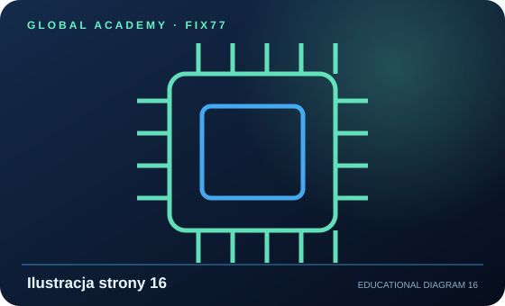
MIKROSKOP • USZKODZONY UKŁAD ZASILANIA
Diagnostyka uszkodzonego układu przetwornicyZbliżenie elementów SMD i śladów przegrzania — materiał do nauki oceny uszkodzeń.
FIX129: fotografie pokazują wyłącznie sprzęt i elektronikę; źródła z metadanymi ludzi lub dłoni są odrzucane.
UVC / DirectShowMikroskopy USB i kamery HDMI przez grabberPodgląd obrazu przez uprawnienia przeglądarkiUSB-Serial / UARTZasilacze, mierniki i kontroleryOdczyt portu; protokół zależy od modeluUSB / HID / WebUSBProgramatory i urządzenia producentówWymagany VID/PID, sterownik i adapter protokołuLAN / SCPI / VISAOscyloskopy i zasilacze siecioweWymagany lokalny mostek Windows — przeglądarka nie otwiera dowolnych portów TCP
Przeciągnij model, aby obrócić · kółko myszy: przybliżenie
WARSTWA: KOMPONENTYWIDOK EDUKACYJNY — NIE JEST BOARDVIEW KONKRETNEJ PŁYTY
ADMIN CONTROL CENTER / SECURE REVIEW
Panel administratora.
Podgląd globalnych statystyk oraz kolejki moderacji. Dostęp do moderacji wymaga sekretu ADMIN_REVIEW_TOKEN skonfigurowanego po stronie Cloudflare Pages. Sekret jest przechowywany tylko w pamięci bieżącej karty.
ADMIN SECURE
Nie połączono. Statystyki publiczne pozostają dostępne bez sekretu.
—Sesje / wszystkie—Profile—Zatwierdzone przypadki—Modele w moderacji
FIX236 / CONTENT QUALITYZgłoszenia błędów materiałów
Dostęp korzysta z sekretu administratora z panelu powyżej. Zgłoszenie wymaga ręcznej weryfikacji; treści nie są zmieniane automatycznie.
MODERATION / KNOWLEDGEPrzypadki napraw
Połącz sekret moderatora, aby pobrać kolejkę.
MODERATION / DEVICE CATALOGModele sprzętu
Połącz sekret moderatora, aby pobrać kolejkę.
CONTENT STUDIO / LOCAL DRAFTSEdytor lekcji i materiałów
Szkice są przechowywane tylko w tej przeglądarce. Możesz je eksportować do JSON i później włączyć do pełnego pakietu publikacyjnego. Zapis szkicu nie publikuje go globalnie.
Twoje szkice0
Brak lokalnych szkiców.
SUPPORT / COMMUNITY CONTROLModeracja propozycji i raportów
Korzysta z tego samego sekretu ADMIN_REVIEW_TOKEN. Token jest odczytywany z pamięci sesji bieżącej karty; nie wpisuj go w publicznych formularzach.
Zgłoszenia przypadków serwisowych z zakładki wsparcia trafiają do istniejącej kolejki „Przypadki napraw” powyżej. Nowe propozycje lekcji są moderowane w kolejce poniżej. Żadne zgłoszenie nie publikuje się automatycznie.
Połącz najpierw panel administratora powyżej, a następnie pobierz kolejkę wsparcia.
Ostatnie pozycje kosztów
Ostatnie ogłoszenia
SZCZEGÓŁY
Materiał
NAPRAWA PC / ELECTRONICS LAB
Laboratorium pomiarów PRO.
Ćwicz obliczenia, interpretację pomiarów i bezpieczną kolejność diagnostyki. Wartości są przykładowe — rzeczywiste napięcia potwierdzaj w dokumentacji dokładnej rewizji.
01EDU SIMULATOR
01 / MULTIMETER TRAINER
Symulator multimetru
ODCZYT SYMULOWANY19.00 VTryb edukacyjny • brak połączenia z urządzeniem
Symulator nie odczytuje fizycznego miernika ani nie steruje sprzętem.
02 / OHM'S LAW
Kalkulator prawa Ohma
Obliczony prąd0,0500 AMoc: 0,250 W
Obliczenia I = U/R i P = U×I. Kalkulator nie dobiera parametrów naprawy.
03 / DIAGNOSTIC CASE
Ćwiczenie: brak reakcji na zasilanie
Urządzenie nie uruchamia się, zasilacz został sprawdzony osobno. Jaki krok jest najrozsądniejszy?
Wybierz odpowiedź, aby zobaczyć uzasadnienie.
SERWIS / HISTORIA POMIARÓW / FIX11
Dziennik pomiarów serwisowych
Zapisuj odczyty dla konkretnego modelu i rewizji PCB, dopisuj punkt pomiarowy, stan zasilania oraz źródło wartości odniesienia. Moduł nie łączy się z miernikiem i nie podpowiada napięć — zapisuje wyłącznie dane wpisane przez użytkownika.
DANE LOKALNE · BEZ WYSYŁANIA
Bezpieczeństwo pomiarów: przed pomiarem rezystancji, ciągłości lub testem diody odłącz i odizoluj wszystkie źródła zasilania, w tym baterię i zasilacz. Pomiar napięcia wykonuj wyłącznie zgodnie z dokumentacją dokładnej rewizji, właściwym zakresem miernika i procedurą BHP/ESD. Nie traktuj przykładowych wartości jako parametrów naprawy.
Historia wpisów
0/500 wpisów
Data / typ
Urządzenie
Punkt / tryb
Odczyt / porównanie
Źródło / notatki
Akcja
Wczytywanie dziennika…
Wpisy zostają w tej przeglądarce. Możesz dołączyć je do kopii postępu w sekcji Moje konto.
MASTER SERVICE CENTER / FIX17
Warsztat Mistrza PRO.
Centrum szkolenia i pracy technika: sekwencje startowe, netlisty PCB, import przebiegów z przyrządów, plan diagnostyczny AI, audyt stanowiska, lokalne karty napraw i scenariusze praktyczne. Dane FIX17 pozostają lokalne; moduły nie sterują sprzętem i nie zastępują dokumentacji producenta.
⚒
—tematów atlasu FIX12
0ukończonych tematów lokalnie
0ukończonych symulacji
3egzaminy po 8 pytań
STREFA PRAKTYCZNA
Atlas napraw
10 DZIEDZIN / 30 TEMATÓW PRAKTYCZNYCH
Interaktywny atlas napraw i diagnostyki
Każdy temat zawiera omówienie, kolejność pracy, wyposażenie i ostrzeżenia. Zakresy, sygnały i punkty pomiarowe zawsze potwierdzaj dla dokładnego modelu i rewizji PCB.
TRENING DECYZJI SERWISOWYCH
Symulator usterek PRO
Wybieraj kolejny krok na podstawie objawów. To scenariusze edukacyjne; nie sterują sprzętem i nie zastępują schematu ani dokumentacji urządzenia.
Wybierz przypadek po lewej stronie.
Każdy przypadek ma trzy decyzje. Po wyborze zobaczysz uzasadnienie, a wynik zapisze się lokalnie.
Symulator nie podaje uniwersalnych napięć ani pinów. Przy realnej naprawie potwierdź model, Board ID, rewizję, warunki zasilania i źródło dokumentacji.
Etap 1 z 3
PRZYPADEK DIAGNOSTYCZNY
PRAWO OHMA / SIECI REZYSTORÓW / KODY SMD
Kalkulatory elektroniki
Obliczenia edukacyjne dla idealnych modeli. Nie wyznaczają automatycznie parametrów naprawy ani bezpiecznych nastaw zasilacza.
Kalkulator obwodu
Wynik obliczenia pojawi się tutaj.
Dekoder rezystorów SMD
Obsługa typowych kodów 3-cyfrowych, 4-cyfrowych, zapisu z R i kodu EIA-96.
Wynik dekodowania pojawi się tutaj.
Oznaczenia SMD bywają zależne od producenta i typu elementu. Wynik traktuj jako wskazówkę; potwierdź go w schemacie lub datasheet.
24 PYTANIA / 3 ŚCIEŻKI EGZAMINACYJNE
Egzaminy i certyfikaty ukończenia testu
Wymagany wynik zaliczenia: 80%. Certyfikat jest lokalnym potwierdzeniem wyniku testu tej platformy, nie państwowym ani akredytowanym dokumentem kwalifikacji.
EGZAMIN / WYNIK MINIMUM 80%
LOKALNY REJESTR / ZDJĘCIA PRZED I PO
Dziennik rzeczywistych przypadków serwisowych
Opisuj objawy, model, Board ID, diagnozę, wykonane czynności i test końcowy. Zdjęcia i wpisy przechowywane są lokalnie w tej przeglądarce — nie są automatycznie wysyłane do serwera.
0 zapisanych przypadków
Nie umieszczaj tutaj haseł, kluczy licencyjnych, numerów seryjnych klientów ani danych osobowych, które nie są potrzebne do naprawy. Przed przekazaniem raportu usuń dane identyfikujące klienta.
Wczytywanie lokalnego dziennika…
WŁASNA WIEDZA / LOKALNE NOTATKI
Edytor własnych materiałów szkoleniowych
Dodawaj własne procedury, opisy lekcji, notatki i źródła. Materiały są prywatne dla tej przeglądarki, nie publikują się automatycznie na stronie ani w bazie klientów.
ŹRÓDŁA PRODUCENTÓW / DATASHEET / SERVICE MANUAL
Wyszukiwarka dokumentacji technicznej
Wyszukuj pełny symbol układu, Board ID, model urządzenia lub numer części. Otwieramy wyniki wyszukiwania; zawsze sprawdzaj producenta, wersję dokumentu i zgodność rewizji.
Źródła producentów
Preferuj oficjalne strony producentów układów, płyt, pamięci i nośników. Sprawdź rewizję oraz datę dokumentu.
Weryfikacja dokumentu
Porównaj pełny symbol, suffix, package, napięcie zasilania, pinout i erraty. Nie używaj przypadkowych plików firmware jako zamiennika datasheetu.
LABORATORIA / POMIARY / ĆWICZENIA
Laboratoria elektroniki PRO
Ćwiczenia z oscyloskopu, termowizji, inspekcji mikroskopowej i schematów blokowych. Symulacje nie łączą się z fizycznym sprzętem.
TRYB EDUKACYJNY / OFFLINE
31 TYPÓW ELEMENTÓW / FUNKCJA / OBJAWY / TESTY
Encyklopedia komponentów
Praktyczna baza elementów laptopów, płyt głównych, GPU i zasilania. Opisy są ogólne — pełny symbol i parametry zawsze potwierdź w datasheet konkretnego producenta.
31 elementów
Wybierz element z listy.
DIAGNOSTYKA KROK PO KROKU / AI CONTEXT BUILDER
Asystent diagnostyczny 2.0
Porządkuje możliwe przyczyny, brakujące informacje i kolejność testów. Raport można przekazać do istniejącego Repair Master AI. Nie jest automatycznym werdyktem ani zamiennikiem schematu.
10 ŚCIEŻEK / 50 ETAPÓW / TESTY KOŃCOWE
Akademia specjalizacji PRO
Wybierz ścieżkę, wykonuj etapy i zalicz sprawdzenie wiedzy. Postęp pozostaje lokalny w tej przeglądarce.
PUNKTY DOŚWIADCZENIA / POSTĘP LOKALNYPoziom Początkujący · 0 XP
XP są wyliczane z ukończonych etapów i lokalnych certyfikatów. Nie są rankingiem publicznym.
WEWNĘTRZNE KARTY / MAGAZYN / KOSZTORYS
Wewnętrzny warsztat serwisowy
To prywatny, lokalny rejestr roboczy dla właściciela akademii — nie jest publicznym formularzem przyjęcia sprzętu ani synchronizacją z bazą klientów.
0 / 300 kart
Dane są zapisane w pamięci przeglądarki tego urządzenia. Nie zapisuj haseł, kluczy BitLocker, danych płatniczych ani nadmiarowych danych osobowych. Przed przekazaniem raportu sprawdź i usuń dane identyfikujące. Regularnie wykonuj kopię danych Warsztatu.
Historia kart
Magazyn części i materiałów
Rejestr lokalny. Zmiana stanu magazynowego jest ręczna.
SKU
Nazwa
Ilość
Koszt jedn.
Operacje
Wczytywanie magazynu…
BIBLIOTEKA CZĘŚCI / ZAMIENNIKI / KRYTERIA ZGODNOŚCI
Dobór komponentów i zamienników
Biblioteka pomaga przygotować listę parametrów do porównania. Nie potwierdza automatycznie zamienności elementów — przed montażem porównaj pełne datasheety, obudowę, pinout, warunki pracy i dokumentację konkretnej płyty.
16 rodzin
Wybierz rodzinę komponentu.
Nie ma uniwersalnego zamiennika „po wyglądzie”. W przypadku MOSFET, kontrolerów, pamięci, baterii, bezpieczników i elementów ochronnych błędny dobór może uszkodzić sprzęt lub stworzyć zagrożenie. W razie braku danych nie montuj części.
MASTER SERVICE CENTER / FIX17
Laboratoria PRO — centrum diagnostyki
Oprócz laboratoriów PCB, BIOS, obrazów dysków, logów Windows, sieci, kompatybilności i kontroli jakości dostępne są nowe moduły: baza STOP/POST, rejestr pomiarów, znaczniki na schematach PDF/obrazach, analizator raportów, przypadki napraw, trener technika, sześć akademii specjalistycznych i szyfrowane kopie danych. Pliki są analizowane lokalnie; brak automatycznego wysyłania do chmury.
10egzaminów specjalistycznych8laboratoriów PRO
SEKWENCJA DIAGNOSTYCZNA / BEZ UNIWERSALNYCH NAPIĘĆ
Laboratorium płyt głównych i linii zasilania
Przećwicz logiczną kolejność diagnozy. Każdy wynik pomiaru musi pochodzić z dokumentacji dokładnej płyty i warunków pomiaru.
Wybierz przypadek, aby zobaczyć plan pomiarów.
Warunki i identyfikacja
Przed pomiarami odłącz zasilanie i baterię, rozładuj układ zgodnie z procedurą producenta. Pomiar pod napięciem wykonuj wyłącznie, gdy procedura i wyposażenie są do tego przeznaczone.
Lista kroków diagnostycznych
ANALIZA PLIKÓW FIRMWARE / LOKALNIE
Laboratorium BIOS / UEFI
Wczytaj dwa pliki firmware do lokalnego porównania, obliczenia SHA-256 i sprawdzenia podstawowych znaczników. Narzędzie niczego nie programuje ani nie modyfikuje.
Plik oryginalny / backup
Nie wybrano pliku.
Plik do porównania
Nie wybrano pliku.
Wybierz pliki. Dla bezpieczeństwa porównanie nie oznacza, że wsad pasuje do konkretnej płyty.
Nie flashuj firmware tylko na podstawie podobnej nazwy lub rozmiaru. Zweryfikuj producenta, model, Board ID, rewizję, pojemność kości, regiony i procedurę serwisową. Zawsze zachowaj niezmieniony backup oryginału.
READ-ONLY IMAGE INSPECTOR / NIE SKANUJE FIZYCZNYCH DYSKÓW
Laboratorium odzyskiwania danych
Analizuj obraz dysku wcześniej utworzony bezpiecznym narzędziem. Przeglądarka nie otrzymuje bezpośredniego dostępu do surowych dysków SATA/NVMe/USB.
Po wybraniu pliku odczytany zostanie wyłącznie nagłówek obrazu i ograniczona próbka.
Bezpieczny przebieg odzyskiwania
Wstrzymaj dalsze używanie nośnika źródłowego.
Utwórz obraz lub kopię sektorową narzędziem przeznaczonym do odzyskiwania.
Pracuj na kopii, a oryginał zabezpiecz przed zapisami.
Udokumentuj błędy odczytu i parametry źródła.
Odzyskane pliki zapisuj na innym nośniku.
Rozpoznawane sygnatury
Moduł sprawdza wyłącznie sygnaturę MBR 0x55AA i podpis GPT „EFI PART” w oczekiwanych pozycjach nagłówka. Nie naprawia tablic partycji i nie potwierdza integralności całego obrazu.
Duży plik: obliczany jest skrót próbki nagłówka, a nie pełny SHA-256 obrazu.
WINDOWS EVENT / BSOD / STORAGE / DISPLAY
Analizator logów Windows
Wczytaj wyeksportowany plik TXT, LOG lub CSV z Podglądu zdarzeń albo raport diagnostyczny. Analiza działa lokalnie i pokazuje dopasowania reguł, nie pełną diagnozę.
Nie wybrano pliku logu.
Pliki .EVTX binarne nie są parsowane w tej wersji. Wyeksportuj zdarzenia do tekstu/CSV. Dopasowania identyfikatorów i fraz mogą wymagać sprawdzenia pełnego zdarzenia oraz dokumentacji Microsoft i producenta sprzętu.
PORÓWNANIE SPECYFIKACJI / BEZ ZGADYWANIA ZGODNOŚCI
Katalog kompatybilności
Wprowadź dane z dokumentacji producentów dla dwóch elementów. Wynik porównuje wyłącznie podane pola — nie zastępuje listy CPU support, QVL ani dokumentacji konkretnego modelu.
Element A — np. płyta / platforma
Element B — część / urządzenie
Uzupełnij pola z dokumentacji.
IPV4 / CIDR / DIAGNOSTYKA SIECI
Laboratorium sieci komputerowych
Kalkulator podsieci IPv4 i checklisty diagnostyczne DNS, DHCP, bramy i Wi-Fi. Moduł nie skanuje sieci i nie wysyła pakietów.
Kalkulator IPv4
Ścieżka diagnozy braku Internetu
QC / TEST KOŃCOWY / RAPORT SERWISOWY
Kontrola jakości po naprawie
Wykonuj testy odpowiednie dla danego sprzętu. Zaznaczaj tylko czynności, które rzeczywiście przeprowadzono.
AI PROMPT BUILDER / DANE Z POMIARÓW
AI Serwisant 3.0 — przygotowanie diagnozy
Utwórz uporządkowany opis usterki, który można przekazać do istniejącego Repair Master AI. Generator nie udaje samodzielnej analizy modelu ani nie zmyśla napięć.
Uzupełnij formularz, aby stworzyć bezpieczny prompt diagnostyczny.
Nie wklejaj haseł, kluczy licencyjnych, numerów seryjnych, danych klientów ani innych danych poufnych. Każdy pomiar musi być opisany wraz z warunkami, a wartości referencyjne muszą pochodzić z dokumentacji.
LOKALNA BIBLIOTEKA / INDEXEDDB
Biblioteka własnej dokumentacji
Przechowuj własne instrukcje, datasheety, schematy, zdjęcia i notatki w tej przeglądarce. Pliki nie są publikowane ani synchronizowane z kontem.
Nie dodawaj plików wykonywalnych, skryptów ani archiwów. Zapis jest lokalny i zależy od miejsca dostępnego w przeglądarce. Wyczyść bibliotekę przed przekazaniem tego profilu innemu użytkownikowi.
10 SPECJALIZACJI / PYTANIA Z WYJAŚNIENIAMI
Egzaminy specjalistyczne PRO
Każdy egzamin ma własny zestaw pytań. Wynik jest lokalnym ćwiczeniem edukacyjnym; nie stanowi formalnej kwalifikacji.
LOKALNE POTWIERDZENIA / HISTORIA / KODY
Centrum certyfikatów i weryfikacji
Certyfikat można wygenerować po ukończeniu wszystkich etapów ścieżki i zaliczeniu trzech pytań kontrolnych. Kod weryfikacyjny sprawdzany jest lokalnie, po imporcie kopii na tym urządzeniu.
0/10 ukończonych ścieżek · 0 certyfikatów
Nie ma jeszcze publicznego rejestru certyfikatów ani QR działającego na obcych urządzeniach. Kod jest weryfikowalny w tej przeglądarce lub po zaimportowaniu kopii danych. Nie przedstawiaj go jako państwowego lub akredytowanego certyfikatu.
Kopia danych Warsztatu
Postęp 10 ścieżek, lokalne certyfikaty, karty serwisowe i magazyn części. Import scala dane o poprawnych identyfikatorach zamiast usuwać istniejące wpisy.
FIX15 gotowy do pracy. Dane warsztatu pozostają lokalne.
KOPIA TWOICH DANYCH
Eksport i import warsztatu
W kopii znajdują się lokalne postępy, własne notatki, wyniki egzaminów i dziennik przypadków ze zdjęciami. Trzymaj kopię w bezpiecznym miejscu.
Dane warsztatu są lokalne dla przeglądarki i urządzenia. Nie synchronizują się same między komputerami ani kontami. Eksport kopii wykonuj regularnie. Nie importuj plików od nieznanych osób.
Gotowe. Wybierz moduł, aby rozpocząć naukę.
DEVICE INTELLIGENCE / BOARD ID DIRECTORY
Centrum modeli i płyt.
Wyszukuj rodziny urządzeń i identyfikatory płyt. Katalog stanowi punkt startowy do weryfikacji — nie udaje dostępu do nieposiadanych schematów ani płatnych baz BoardView.
03MODEL FINDER
Wyniki to przykładowe rodziny i nazewnictwo. Przed naprawą potwierdź pełny model, rewizję PCB i źródło dokumentacji.
NAUKA OD A DO Z / PRACTICE & SPECIALIST TRAINING / FIX27
Centrum Praktyki PRO.
Interaktywne laboratoria elektroniki, bezpieczne scenariusze diagnostyczne, własna biblioteka schematów, symulatory obliczeń, sześć ścieżek specjalistycznych, egzaminy i portfolio technika.
PCBREPAIR LABFIX27
Tryb edukacyjny i lokalny. Symulatory nie sterują fizycznym sprzętem ani nie generują napięcia. Dokumenty, znaczniki, pomiary, egzaminy i zadania są zapisywane w tej przeglądarce. Nie wpisuj danych klientów, haseł ani sekretów. Wyniki nie zastępują schematu dokładnej rewizji i procedur bezpieczeństwa.
0/36Lekcje specjalistyczne
0Przypadki
0/0Egzaminy
0Wpisy pomiarowe
01 / INTERACTIVE COMPONENT ATLAS
PCB Repair Master Lab.
Wybierz element, sprawdź jego rolę, plan kontroli i ryzyka. Dodawaj własne pomiary wraz z warunkami i źródłem odniesienia.
8 punktów referencyjnych
Schemat poglądowy pomaga w nauce identyfikacji bloków. Nie przedstawia konkretnego modelu ani rzeczywistych punktów pomiarowych.
ATLAS ELEMENTÓWWybierz komponent
U1 / EC
Kontroler EC
Wybierz komponent z atlasu.
MEASUREMENT JOURNAL
Dziennik pomiarów
Wartości własne wpisujesz ręcznie. Nie podajemy uniwersalnych napięć dla nieznanej rewizji płyty.
0 zapisów
Data
Punkt
Rodzaj
Wartość
Stan
Przyrząd
02 / DIAGNOSTIC DECISION ENGINE
Real Repair Challenge.
Rozwiązuj scenariusze krok po kroku. Punkty przyznawane są za kolejność diagnostyki i bezpieczeństwo, a nie za zgadywanie wymienianej części.
Przypadki są symulacjami edukacyjnymi. Nie wykonuj pomiarów na żywej płycie bez wiedzy, wyposażenia i dokumentacji. Każda wartość rzeczywista wymaga źródła dla konkretnego modelu i rewizji.
03 / SCHEMATIC & BOARDVIEW CENTER
Centrum schematów.
Dodawaj własne pliki PDF i obrazy. Na zdjęciach możesz nanosić znaczniki punktów, a do każdego dokumentu dodać notatki.
Lokalna biblioteka · 20 MB / plik
Nie wybrano dokumentu.
Wybierz dokument z listy, aby rozpocząć.
04 / VIRTUAL ELECTRONICS BENCH
Wirtualny stół pomiarowy.
Kalkulatory obwodów idealnych i poglądowy przebieg. To nie jest symulator SPICE ani sterownik fizycznego oscyloskopu.
SYMULACJA OFFLINE
Wybierz tryb i oblicz wartości.
OSCILLOSCOPE PREVIEW
Przebieg referencyjny
Sygnał matematyczny, nie odczyt z fizycznego przyrządu. Import rzeczywistych przebiegów CSV jest dostępny w Warsztacie Mistrza.
Nie używaj kalkulatora do wyznaczania nastaw nieznanej płyty. W obwodach rzeczywistych występują tolerancje, elementy nieliniowe, ESR, sprzężenia i zależności czasowe.
05 / AI TECHNICIAN MENTOR
Mentor technika AI.
Utwórz uporządkowany kontekst diagnozy i przekaż go do istniejącego czatu AI Akademii. Wysyłka następuje dopiero po Twoim kliknięciu w czacie.
Mentor AI porządkuje hipotezy i kolejność testów, ale nie potwierdza naprawy bez dowodów. Nie wklejaj haseł, numerów seryjnych, danych klientów ani kluczy BitLocker. Wiadomość trafia do skonfigurowanego dostawcy AI dopiero po świadomym wysłaniu.
06 / SPECIALIST ACADEMIES
Akademie specjalistyczne.
Sześć nowych ścieżek, po sześć etapów. Zaznaczaj wykonane lekcje, aby budować lokalną mapę kompetencji.
6 akademii / 36 etapów
07 / EXAM CENTER PRO
Centrum egzaminacyjne.
Egzaminy specjalistyczne z wyjaśnieniami. Próg zaliczenia 75%. Wynik pozostaje lokalny.
Wyniki i certyfikaty tego modułu są wyłącznie potwierdzeniem ćwiczenia w Akademii. Nie są dokumentem państwowym ani akredytowanymi uprawnieniami.
08 / TECHNICIAN PORTFOLIO
Portfolio technika.
Zbuduj podsumowanie ukończonych etapów, przypadków diagnostycznych i egzaminów. Możesz pobrać JSON lub wydrukować raport.
Portfolio zostanie zbudowane z ukończonych etapów i lokalnej historii.
SKILL MAP
Mapa postępu
LOCAL DATA BACKUP
Kopia postępów FIX27
Eksport/import łączy nowe wpisy bez usuwania istniejących. Dokumenty PDF i zdjęcia z Schematics Center są osobną biblioteką IndexedDB i nie są częścią tego pliku JSON.
09 / INSTRUCTOR STUDIO
Studio instruktora.
Twórz zadania, rubryki oceniania i komentarze. W tej wersji studio jest lokalnym narzędziem przygotowania materiałów — nie udaje wieloosobowego panelu z rolami i synchronizacją uczniów.
Zadania i oceny są lokalne na tym urządzeniu. Nie są wysyłane kursantom i nie działają jako system kont nauczycielskich. Do wspólnej pracy potrzebny będzie osobny, autoryzowany backend z uprawnieniami instruktora.
10 / KNOWLEDGE SEARCH PRO
Wyszukiwarka wiedzy praktycznej.
Wyszukuj w komponentach PCB, scenariuszach napraw, akademiach, kalkulatorach i instrukcjach nowego Centrum Praktyki.
Wpisz hasło, aby rozpocząć.
ROZSZERZENIE GLOBALNEJ WIEDZY
Pełną bazę 1060 lekcji, encyklopedię komponentów i istniejące materiały znajdziesz przez globalną wyszukiwarkę u góry strony.
Centrum Praktyki FIX27 inicjalizuje się…
NAUKA OD A DO Z / PERSONAL LEARNING & TECHNICAL WORKSHOP
Mój pulpit nauki PRO.
Jedno centrum do kontynuowania kursów, wyszukiwania przypadków, ćwiczeń pomiarowych, egzaminów z kodem QR, atlasu płyt, pracy offline i dokumentowania postępów. Twoje prywatne wpisy pozostają w tej przeglądarce.
✦
—lekcje w katalogu
0ukończone lekcje
0zapisane zakładki
0ćwiczenia diagnostyczne
TWOJA ŚCIEŻKA
Ładowanie postępu nauki…
POSTĘP KURSU
Mapa ukończenia lekcji
Odczytuję lokalny postęp…0%
Postęp korzysta z istniejącego rejestru ukończonych lekcji Akademii. FIX40 nie kasuje ani nie zastępuje wcześniejszych zapisów.
CONTINUE LEARNING
Ostatnio otwierane lekcje
Brak ostatnio otwieranych lekcji.
BOOKMARKS
Moje zakładki
Nie dodano jeszcze zakładek.
LOCAL KNOWLEDGE INDEX + AI CHAT BRIDGE
Wyszukiwarka objawów, modeli i procedur
Przeszukuj lokalny indeks lekcji, przypadków usterek, metod napraw, komponentów i materiałów. Dopasowane wyniki możesz przekazać do generatywnego czatu AI — dopiero po kliknięciu.
Wyniki pochodzą z lokalnego indeksu Akademii. Wyszukiwarka nie potwierdza diagnozy ani zgodności części.
Najlepsze dopasowania
0 wyników
Wpisz frazę, aby rozpocząć wyszukiwanie.
GENERATIVE AI / USER CONTROL
Przekaż przypadek do czatu AI
Opis i wyniki nie zostaną wysłane automatycznie. Przed wysłaniem usuń hasła, numery seryjne, klucze BitLocker i dane klientów.
VIRTUAL DIAGNOSTIC BENCH / EDUCATION ONLY
Wirtualny stół diagnostyczny
Ćwicz kolejność pomiarów, rozpoznawanie symptomów i interpretację wyników na fikcyjnych układach treningowych. Symulator nie łączy się z miernikiem, płytą ani zasilaczem.
Bezpieczeństwo: wszystkie wartości i Board ID w tym module są sztucznymi danymi EDU. Nie przenoś ich na prawdziwe urządzenia. Rezystancję/ciągłość mierz tylko po odłączeniu wszystkich źródeł energii i bezpiecznym rozładowaniu. Nie otwieraj zasilaczy sieciowych ani nie zwieraj bezpieczników.
TRAINING HISTORY
Zapisane przebiegi
Przebiegi są przypisane do lokalnego profilu przeglądarki. Można użyć ich później w raporcie.
Brak zapisanych ćwiczeń.
EDUCATION EXAM CENTER / QR CERTIFICATES
Egzaminy i osiągnięcia edukacyjne
Trzy egzaminy po osiem pytań. Wynik co najmniej 75% tworzy certyfikat z unikalnym kodem QR oraz możliwością lokalnej weryfikacji identyfikatora.
Certyfikaty potwierdzają wykonanie ćwiczenia na platformie. Nie są państwowymi uprawnieniami ani akredytacją. Kod QR zawiera identyfikator, który można sprawdzić w lokalnych danych tej przeglądarki; nie jest to podpis kryptograficzny ani centralny rejestr.
EXAM HISTORY
Historia podejść
QR RECORDS
Moje certyfikaty
LOCAL VERIFICATION
Sprawdź identyfikator certyfikatu
BOARD ID / PCB REVISION / COMPONENT ATLAS
Atlas płyt, rewizji i elementów
Przeglądaj katalog producentów i modeli, wyszukuj komponenty oraz zapisuj własne karty PCB z Board ID, rewizją i źródłem odniesienia.
Ładowanie katalogu
Ładowanie katalogu producentów i modeli…
LOCAL BOARD REGISTER
Dodaj kartę płyty / wariantu
Własne wpisy nie są publikowane ani uznawane automatycznie za prawdziwe. Weryfikuj oznaczenia z nadrukiem PCB i dokumentacją dokładnej rewizji.
COMPONENT ENCYCLOPEDIA
Wyszukiwarka układów
Wpisz oznaczenie, aby przeszukać lokalną encyklopedię.
OFFLINE PRO / SELF-CONTAINED LEARNING PACK
Kursy i dokumentacja bez Internetu
Wygeneruj jednoplikowy podręcznik HTML, który można otworzyć na innym komputerze bez sieci, albo strukturalny pakiet JSON do przenoszenia treści.
Tryb aplikacji PWA: po otwarciu platformy online przeglądarka buforuje główny interfejs, kursy i pliki FIX40. Wybierz „Zainstaluj aplikację” w menu przeglądarki (jeśli jest dostępne), aby łatwiej uruchamiać ją offline. Pierwsze pobranie wymaga Internetu.
Sprawdzanie połączenia…
OFFLINE DOCUMENT LIBRARY
Zapisz dokumenty PDF / DOCX do pracy bez sieci
Biblioteka zawiera 30 plików (około 66,7 MB / 63,6 MiB według katalogu). Pobranie zapisuje je w pamięci PWA tej przeglądarki; po pobraniu można je otwierać bez Internetu na tym urządzeniu.
Dokumenty nie zostały jeszcze pobrane do pamięci offline.
PACKAGE SUMMARY
Stan ostatniego pakietu
Nie wygenerowano jeszcze pakietu offline.
Import można wykonać z pliku utworzonego w FIX40 lub nowszym zgodnym wydaniu.
DOCUMENTATION / PRINT READY / PDF
Generator raportów ćwiczeń i przypadków
Twórz raporty edukacyjne z modelem, Board ID, rewizją, objawem, procedurą, pomiarami i źródłem. Przeglądarka wygeneruje dokument do wydruku — wybierz „Zapisz jako PDF”.
W raporcie używaj zanonimizowanych danych. Nie wpisuj haseł, kluczy BitLocker, numerów seryjnych klientów ani danych osobowych. Wartości pomiarowe zawsze podawaj wraz z jednostką, stanem zasilania i dokumentacją źródłową.
REPORT ARCHIVE
Ostatnie raporty
Brak zapisanych raportów.
NAUKA OD A DO Z / PRAKTYKA TECHNICZNA / FIX41
Centrum praktyki serwisowej PRO.
Jedno centrum do nauki diagnostyki PC, elektroniki, BIOS/UEFI, schematów, lutowania, składania komputerów i praktycznych napraw. Wykorzystuje wcześniejsze laboratoria FIX14–FIX40 i dodaje nowe symulatory.
41ACADEMY
Tryb edukacyjny: nowe symulatory pracują na fikcyjnych danych szkoleniowych. Nie sterują fizycznym zasilaczem, płytą, programatorem ani lutownicą. Zgodność części, firmware i wartości pomiarowe potwierdzaj w dokumentacji dokładnego modelu i rewizji.
0XP / doświadczenie
0zapisane konfiguracje PC
0rozwiązane przypadki
0zaliczone ćwiczenia
Uruchamianie Akademii Serwisanta FIX41…
Akademia FIX41 zapisuje postęp lokalnie na tym urządzeniu.
NAUKA OD A DO Z / REAL SERVICE WORKSHOP / FIX42
Realny warsztat serwisowy PRO.
Schematy i Boardview z własnych plików, laboratorium pomiarowe EDU, wspomagana diagnoza, zlecenia serwisowe, baza części, odzyskiwanie Windows i wyzwania praktyczne. Wszystko w jednym centrum.
42WORKSHOP
Granica symulacji i rzeczywistej naprawy: multimetr, oscyloskop i zasilacz na tej stronie są symulacjami edukacyjnymi. Importowane PDF/CSV/JSON pozostają lokalnie w przeglądarce. Moduł nie steruje fizycznym sprzętem i nie potwierdza zgodności części bez dokumentacji producenta. Rezystancję/ciągłość wolno mierzyć wyłącznie na odłączonym, bezpiecznie rozładowanym obwodzie.
0zlecenia lokalne
0zaimportowane boardview
0ćwiczenia pomiarowe
0pozycji bazy części
Uruchamianie Realnego Warsztatu FIX42…
Warsztat FIX42 zapisuje dane lokalnie na tym urządzeniu.
Centrum Nauki FIX40 przygotowuje moduły…
NAUKA OD A DO Z / FIX43 KNOWLEDGE SUITE
Centrum wiedzy i diagnostyki PRO 2.0
Powiąż dokumentację, pomiary, komponenty, konfiguracje i dowody napraw w jednym lokalnym warsztacie. Dane tej sekcji są zapisywane na tym urządzeniu; kopię można zaszyfrować i przenieść na inny komputer.
43KNOWLEDGE
Bezpieczeństwo i wiarygodność: wyniki analiz są edukacyjnymi wskazówkami, a nie pewną diagnozą. Sekwencje zasilania zależą od konkretnej płyty i jej rewizji. Przeglądarka nie steruje zasilaczem ani programatorem; port szeregowy działa wyłącznie w trybie odczytu, po świadomym wyborze urządzenia.
Uruchamianie Centrum Wiedzy FIX43…
Centrum Wiedzy FIX43 zapisuje dane lokalnie.
TWOJA OPINIA ROZWIJA AKADEMIĘ
Oceń stronę i zgłoś, co poprawić
Powiedz, co jest przydatne, czego brakuje, co warto zmienić i które elementy nie działają. Każde zgłoszenie zapisze się najpierw na tym urządzeniu. Po zaznaczeniu zgody możesz wysłać je do kolejki opinii platformy.
★
NAUKA OD A DO Z / MASTER SERVICE CENTER PRO
Master Service Center FIX44
Akademia architektur, identyfikacja płyt, BIOS, termika, bateria, odzyskiwanie danych, sieci, dokumentacja, zlecenia i trening napraw. Moduły eksperckie łączą się z wcześniejszym Centrum Wiedzy FIX43.
44MASTER
Bezpieczeństwo i wiarygodność: BIOS i obrazy dysków są analizowane tylko do odczytu w pamięci przeglądarki. Nie ma flashowania, zapisu na dysku, sterowania routerem, baterią ani zasilaczem. Dane klientów, pliki i historia pozostają lokalne. „AI Learning Coach” używa reguł i wyników lokalnych — nie udaje generatywnego modelu.
Uruchamianie Master Service Center FIX44…
Master Service Center FIX44 przechowuje dane lokalnie.
NAUKA OD A DO Z / PROFESSIONAL REPAIR & QUALITY
Professional Repair & Quality Center FIX45
Dwa połączone tryby: Akademia oraz Professional Service. Identyfikacja sprzętu, testy o ograniczonym obciążeniu, kontrola jakości, sterowniki, demontaż, termika, zasilacze, SMD, Windows, paszporty urządzeń, workflow, kursy i analiza przypadków.
45PRO
Uczciwy zakres działania: przeglądarka nie odczytuje uniwersalnie temperatur CPU/GPU, SMART ani czujników. Test obciążeniowy jest łagodnym testem JavaScript, a nie pełnym burn-in sprzętu. BIOS, dyski i urządzenia zewnętrzne nie są zapisywane ani sterowane. Dane paszportów i zadań są lokalne.
Uruchamianie Professional Repair & Quality Center FIX45…
FIX45 przechowuje dane lokalnie.
NAUKA OD A DO Z / MASTER CONTROL CENTER
Master Control Center FIX47
Jeden pulpit do kontroli jakości platformy, przeglądu opinii, projektów praktycznych, doboru podzespołów, planów nauki, zleceń lokalnych i przygotowania bezpiecznego wydania.
47CONTROL
Bezpieczny zakres: audyt sprawdza strukturę strony i zasoby dostępne z przeglądarki. Nie potwierdza dostępu Cloudflare, backupu D1 ani poprawności danych produkcyjnych. Zlecenia i plany są lokalne; nie wpisuj danych osobowych klientów. Panel nie publikuje, nie migruje D1, nie wykonuje rollbacku i nie steruje sprzętem.
Uruchamianie Master Control Center FIX47…
FIX47 przygotowuje lokalne centrum kontroli.
NAUKA OD A DO Z / ULTIMATE QUALITY & KNOWLEDGE CENTER
Ultimate Quality & Knowledge Center FIX49
Wspólny kontrakt wydań, kontrola przeglądarki, centrum błędów, audyt bezpieczeństwa, symulator migracji D1, plan staging, rollback i bezpieczny pakiet diagnostyczny.
49QUALITY
Granice bezpieczeństwa: panel nie publikuje do Cloudflare, nie wykonuje SQL, nie tworzy bazy D1, nie zmienia sekretów i nie uruchamia rollbacku. Audyty przeglądarkowe nie zastępują testów Playwright ani audytu penetracyjnego. Staging wymaga oddzielnej bazy D1 i sekretów preview.
Uruchamianie Ultimate Quality Center FIX49…
FIX49 przygotowuje centrum jakości i wydań.
NAUKA OD A DO Z / MISTRZOWSKA ŚCIEŻKA SERWISANTA / FIX145 + FIX148
Centrum Mistrza PRO.
Jedno miejsce do prowadzenia nauki, ćwiczenia diagnozy, sprawdzania zgodności zestawu PC, dokumentowania przypadków i zdobywania potwierdzeń ukończenia modułów edukacyjnych.
1083lekcji w katalogu
0/5kroków ścieżki
0kart portfolio
01 / TWOJA ŚCIEŻKA
Od podstaw do samodzielnej diagnozy
Otwieraj działające moduły Akademii i zaznaczaj ukończone etapy. Postęp tego centrum zapisuje się lokalnie w przeglądarce.
POSTĘP LOKALNY
Ukończono 0 z 5 etapów.
02 / WARSZTAT KONFIGURACJI
Konfigurator zgodności PC
Sprawdź podstawowe zależności między gniazdem CPU, płytą, pamięcią, obudową i budżetem mocy. To kontrola edukacyjna, a nie baza wszystkich modeli ani gwarancja zgodności konkretnego produktu.
Ustaw podzespoły i uruchom kontrolę. Wynik pokaże zgodność podstawowych parametrów oraz elementy wymagające sprawdzenia w instrukcji producenta.
03 / WIRTUALNY MONTAŻ KOMPUTERA
Symulator składania PC — osiem etapów
Przejdź przez kolejność przygotowania stanowiska, montażu podzespołów, okablowania i pierwszego POST. Zaznaczenia zapisują się lokalnie.
ĆWICZENIE KROKOWE
0/8ukończonych etapów
Symulator jest checklistą edukacyjną. Zawsze porównaj kolejność z instrukcją dokładnego modelu płyty, obudowy, chłodzenia i zasilacza. Nie używaj siły przy montażu procesora ani złączy.
03 / WSTĘPNY PLAN DIAGNOZY
Od objawu do kolejnych testów
Generator układa bezpieczną listę czynności dla wybranego scenariusza. Nie diagnozuje automatycznie podzespołu i nie zastępuje dokumentacji modelu.
TRYB EDU
Wybierz urządzenie i objaw. Otrzymasz plan kroków, punkty bezpieczeństwa i listę informacji do raportu.
Głębszą analizę z lokalną bazą przypadków uruchomisz w istniejącym module .
04 / SPRAWDZIAN
Codzienny test wiedzy
Pięć pytań praktycznych. Wynik zapisze się w historii tego urządzenia. Wynik co najmniej 4/5 pozwala wydrukować edukacyjne potwierdzenie ukończenia testu.
5 PYTAŃ
NAUKA OD A DO Z
EDUKACYJNE POTWIERDZENIE UKOŃCZENIA
Certyfikat wiedzy praktycznej
Potwierdza ukończenie lokalnego testu edukacyjnego
Uczestnik Akademii
Test: Podstawy diagnostyki i bezpiecznej pracy
Wynik: 5/5Dokument edukacyjny platformy. Nie jest państwowym ani zawodowym uprawnieniem.
05 / PORTFOLIO
Twoje przypadki serwisowe
Dodawaj edukacyjne notatki z ćwiczeń i opisuj wynik. Wpisy pozostają lokalnie w tej przeglądarce — nie są wysyłane do serwera ani do bazy D1.
LOKALNE DANE
06 / WSZYSTKIE LABORATORIA
Przejdź bezpośrednio do modułu
Centrum Mistrza porządkuje istniejące funkcje. Nie dubluje ich i nie zastępuje ich własnymi atrapami.
FIX148 / 7 NOWYCH MODUŁÓW PRAKTYCZNYCH
Centrum technika — narzędzia mistrzowskie PRO
Interaktywne narzędzia do nauki BoardView, przebiegu serwisu, zgodności zestawów, raportowania, tworzenia lekcji, analizy typowych usterek i ćwiczeń lutowania. Dane zapisują się lokalnie w tej przeglądarce.
LOKALNE DANE / BEZ MIGRACJI D1
INTERAKTYWNA PLANSZA EDUKACYJNA
BOARDVIEW PRO — poznawaj oznaczenia PCB
Wybierz symbol na przykładowej płycie, aby zobaczyć rolę elementu i bezpieczną kolejność nauki. To plansza demonstracyjna, nie BoardView konkretnego modelu ani rzeczywisty pinout.
Legenda: U — układ, J — złącze, F — bezpiecznik, Q — tranzystor, L — dławik, C — kondensator, TP — punkt pomiarowy. Oznaczenia mają charakter przykładowy.
U1 — Układ sterujący
Wybierz element.
Nie używaj demonstracyjnej planszy do lokalizowania pinów ani podawania napięć. Do prawdziwej naprawy wymagane są schemat, Board ID, rewizja PCB i dokumentacja producenta.
OD PRZYJĘCIA DO TESTU KOŃCOWEGO
Symulator prawdziwego procesu serwisowego
Przećwicz kolejność pracy przy przyjęciu sprzętu, diagnozie, USB-C, przegrzewaniu lub ryzyku utraty danych. Zakończony przebieg możesz zapisać jako lokalny wpis ćwiczenia.
Postęp ćwiczenia: 0/0
Wybierz scenariusz i kliknij „Rozpocznij”.
Wyniki są lokalne.
Historia ćwiczeń
Brak ukończonych scenariuszy.
To trening procesu. Nie jest zleceniem serwisowym, nie kontaktuje się z klientem i nie zapisuje danych w D1.
ROZSZERZONA KONTROLA PARAMETRÓW
PC Compatibility Master
Rozszerzenie istniejącego konfiguratora o długość GPU, wysokość chłodzenia, zgodność złącza zasilania i rodzaj obsługi M.2.
RAPORT / PROTOKÓŁ / WYDRUK PDF
Profesjonalna dokumentacja serwisowa
Utwórz czytelny raport z objawami, dowodami diagnozy, wykonanymi pracami, częściami i testem końcowym. Dane pozostają lokalnie na tym urządzeniu.
Nie wpisuj haseł, kluczy BitLocker, danych płatniczych ani zbędnych danych osobowych. Przed wysłaniem/drukiem sprawdź treść i usuń informacje identyfikujące, jeśli nie są potrzebne.
TWORZENIE WŁASNYCH MATERIAŁÓW
Akademia nauczyciela
Twórz lokalne szkice lekcji z celem, materiałami, krokami i pytaniem kontrolnym. Szkice można przeglądać i eksportować — nie są automatycznie publikowane do wspólnego katalogu.
Nie ma jeszcze własnych szkiców.
18 PRZYPADKÓW REFERENCYJNYCH + WŁASNE NOTATKI
Baza usterek PRO
Wyszukiwalne przypadki z kolejnością bezpiecznych kontroli. Każdy przypadek jest punktem startowym, a nie diagnozą konkretnego podzespołu.
18 przypadków
Wybierz przypadek
Opis i kroki pojawią się tutaj.
SMD / HOT-AIR / KONTROLA OPTYCZNA
Laboratorium lutowania PRO
Krokowe ćwiczenie przygotowania stanowiska, materiałów, grotu, spoin i kontroli optycznej. Checklistę możesz odhaczać po wykonaniu ćwiczeń na nieaktywnej płytce treningowej.
Postęp ćwiczenia: 0/7
Mini sprawdzian
Jak dobierać temperaturę i materiały do konkretnego zadania?
Zasady bezpieczeństwa
Używaj sprawnej wentylacji/odciągu i ochrony oczu.
Nie lutuj baterii, elementów pod napięciem ani nieznanych obwodów.
Stosuj ESD i instrukcję urządzeń warsztatowych.
Pracę przy sieci 230 V pozostaw osobom z właściwymi kwalifikacjami.
FIX149 / KOLEJNE NARZĘDZIA MISTRZOWSKIE
Trening zaawansowany, bezpieczeństwo danych i nauka offline
Pięć dodatkowych narzędzi edukacyjnych. Symulator oscyloskopu pokazuje sygnały syntetyczne, konkurs działa lokalnie, a pakiety offline są samodzielnymi plikami HTML.
LOKALNE DANE · BEZ D1
WYZWANIE NA CZAS / 5 PYTAŃ
Konkurs serwisowy PRO
Rozwiąż pięć losowanych pytań diagnostycznych w limicie 120 sekund. Wyniki i ranking są prywatne i lokalne dla tej przeglądarki — nie są rankingiem globalnym.
02:00pozostały czas
Gotowy do rozpoczęcia.
Wybierz „Rozpocznij konkurs”.
Każda runda obejmuje pięć pytań z puli diagnostycznej.
SYGNAŁY SYNTETYCZNE / TRENING ODCZYTU
Wirtualny oscyloskop PRO
Wybieraj kształt, częstotliwość, amplitudę i składową stałą. Wykres i obliczenia są symulowane matematycznie — nie są pomiarem płyty ani odczytem z przyrządu.
TRYB EDUKACYJNY
Siatka jest poglądowa. Nie używaj tego wykresu do oceny rzeczywistych napięć ani bezpieczeństwa urządzenia.
OCHRONA NOŚNIKA / ZGODA / KOPIA / ODZYSKIWANIE
Centrum bezpieczeństwa danych
Checklisty pomagają zaplanować bezpieczną pracę. Moduł niczego nie kopiuje, nie odszyfrowuje i nie modyfikuje nośnika automatycznie.
Lista bezpiecznego postępowania
Postęp checklisty: 0/7
Ważne: nie zapisuj tutaj haseł, kluczy odzyskiwania BitLocker, danych płatniczych ani danych osobowych klienta. Przy podejrzeniu awarii fizycznej ogranicz zbędne uruchamianie nośnika; nie inicjalizuj i nie formatuj źródła.
ŹRÓDŁA PRODUCENTÓW / KATALOG REFERENCYJNY
Biblioteka dokumentacji PRO
Odnośniki prowadzą do oficjalnych portali producentów i organizacji. Zapisane pozycje są lokalnymi zakładkami — nie oznaczają, że dokument został pobrany ani że licencja zezwala na jego redystrybucję.
Dodaj własną zakładkę do dokumentacji
Moje zakładki
SAMODZIELNY MATERIAŁ / BEZ POŁĄCZENIA Z SIECIĄ
Tryb nauki Offline PRO
Wybierz pakiety i pobierz pojedynczy plik HTML z treścią, checklistami i notatkami. Otworzysz go później bez logowania i bez Internetu. Plik nie zawiera danych kont ani informacji klienta.
JEDEN PLIK HTML
Nie wybrano pakietów.
Powstały plik jest samodzielnym materiałem edukacyjnym. Zmiany i notatki wykonane w tym pliku pozostają lokalnie na urządzeniu, na którym go otworzysz.
FIX151–FIX155 / AKADEMIA SERWISANTA PRO
Praktyczna akademia diagnostyki, napraw i sieci
Rozbudowany zestaw ćwiczeń krok po kroku: przypadki serwisowe, BIOS/UEFI, diagnostyka podzespołów, egzaminy, sieci, portfolio i panel nauczyciela.
LOKALNE POSTĘPY · BEZ MIGRACJI D1
Przypadki rozwiązane0
Laboratoria ukończone0
Egzaminy zaliczone0
Wpisy portfolio0
DIAGNOZOWANIE METODĄ KROK PO KROKU
Akademia Przypadków Serwisowych PRO
Wybierz przypadek i podejmuj decyzje diagnostyczne. Punkty przyznawane są za bezpieczną kolejność i uzasadnione działania.
6 STUDIÓW PRZYPADKU
Wybierz przypadek, aby rozpocząć.
Twoje stanowisko diagnostyczne
Po rozpoczęciu poznasz opis zgłoszenia, a następnie wybierzesz kolejne czynności.
BOOT / PARTYCJE / BEZPIECZEŃSTWO
Laboratorium BIOS / UEFI / Windows PRO
Symuluj konfiguracje rozruchu, GPT/MBR, EFI, Secure Boot, TPM, AHCI i RAID. Ćwiczenie analizuje ustawienia, ale nie zmienia firmware ani partycji.
TRYB SYMULACJI
Ustaw parametry i uruchom analizę.
Ważne: wynik zależy od konkretnego komputera, firmware, sterownika kontrolera i wymagań systemu. Zmiana AHCI/RAID po instalacji może uniemożliwić start Windows. Przed rzeczywistą zmianą wykonaj kopię i sprawdź instrukcję producenta.
OBJAW → TEST → WNIOSEK → NASTĘPNY KROK
Laboratorium Diagnostyki Sprzętu PRO
Analizuj przykładowe dane RAM, SSD/HDD, GPU, CPU, chłodzenia, zasilania i baterii. Wszystkie odczyty są przygotowanymi danymi szkoleniowymi.
6 SYMULOWANYCH AWARII
Wybierz najbardziej uzasadniony następny krok
Historia laboratorium
Brak ukończonych ćwiczeń.
LOSOWY ZESTAW / LIMIT 10 MINUT / PRÓG 70%
Egzaminy i Certyfikaty PRO
10 pytań z puli diagnostyki, BIOS, sprzętu, bezpieczeństwa danych i sieci. Po zaliczeniu wygenerujesz imienny dokument ukończenia ćwiczenia.
10 PYTAŃ
10:00
Egzamin nie został rozpoczęty.
Gotowy do sprawdzenia wiedzy?
Po rozpoczęciu wybierz jedną odpowiedź na każde pytanie.
IPv4 / CIDR / DHCP / DNS / WI-FI
Akademia Sieci Komputerowych PRO
Kalkulator podsieci IPv4 oraz interaktywny trening diagnostyki sieci. Obliczenia są lokalne; test ping i wykrywanie routerów nie są wykonywane w prawdziwej sieci.
KALKULATOR + TRENING
Kalkulator IPv4 / CIDR
Symulator rozwiązywania problemów
PRAKTYKI / HISTORIA CZYNNOŚCI / KOMPETENCJE
Praktyki Serwisowe i Portfolio PRO
Dokumentuj przebieg ćwiczeń i własne wnioski. Używaj pseudonimów i danych szkoleniowych — nie wpisuj danych osobowych klientów ani haseł.
Moje portfolio
Nie zapisano jeszcze wpisów.
WSPÓLNY SYSTEM POSTĘPÓW
Tutor serwisowy i mapa umiejętności
Asystent lokalny dobiera wskazówki na podstawie tematów i typowych procedur. Działa bez wysyłania tekstu do zewnętrznej usługi; nie jest generatywną rozmową z modelem AI.
OFFLINE / LOKALNIE
Zapytaj tutora
Wpisz temat, aby uzyskać wskazówki i kolejność bezpiecznych działań.
Mapa kompetencji
Poziomy wyliczane są z ukończonych ćwiczeń, egzaminów i wpisów portfolio zapisanych na tym urządzeniu.
ZADANIA / UCZNIOWIE / OCENA POSTĘPÓW
Tryb nauczyciela PRO
Twórz lokalne zadania dla uczniów, sprawdzaj ich status i eksportuj raport klasy. To panel szkoleniowy na tym urządzeniu — bez publikacji do kont uczniów i bez synchronizacji serwerowej.
DANE LOKALNE
Zadania i ocena
Nie utworzono jeszcze zadań.
FIX156–FIX162 · MASTER TECHNICIAN ACADEMY · GEMINI FIX165
Laboratoria mistrzowskie, AI i klasy online
Praktyczne symulatory, atlas podzespołów, nauczyciel AI, zadania online i rejestr ukończeń. Wszystkie narzędzia jasno oznaczają, co jest symulacją, a co zapisem w istniejącej bazie Akademii.
0punktów praktyki
FIX156 · INTERAKTYWNA MAPA PŁYTY
BoardView i Schematy Elektroniczne PRO
Wybierz blok na schemacie szkoleniowym. Zobacz jego rolę, typowe objawy i bezpieczną kolejność weryfikacji. To mapa poglądowa, nie pinout konkretnego laptopa.
8 BLOKÓW
MOTHERBOARD · TRAINING MAP MODEL EDUKACYJNY
EDUKACYJNE POŁĄCZENIA BLOKOWE · BEZ PINÓW I NAPIĘĆ RZECZYWISTEJ PŁYTY
Wybierz blok płyty
Kliknij element na schemacie, aby poznać jego funkcję.
Wybierz blok na schemacie.
FIX157 · SYMULATOR PRZYRZĄDÓW
Wirtualny Warsztat Elektronika PRO
Multimetr cyfrowy, pomiary przykładowych szyn i diagnostyka scenariuszy. Wskazania są syntetyczne i nie są połączone z prawdziwą sondą ani sprzętem.
SYMULACJA
DIGITAL MULTIMETER TRAINING MODE
V DC · ODCZYT MODELOWY--.---V
Wybierz scenariusz, tryb i punkt pomiarowy.
FIX158 · KOMPATYBILNOŚĆ PODZESPOŁÓW
Konfigurator Komputerów i Kompatybilności PRO
Dobierz socket, typ pamięci i zasilacz. Wynik jest uproszczonym treningiem doboru, nie gwarancją fizycznej zgodności konkretnego SKU.
Ustaw komponenty i rozpocznij kontrolę zestawu.
FIX159 · ELEKTRONIKA / SMD / BGA
Akademia Lutowania i BGA PRO
Ćwiczenia kolejności, przygotowania stanowiska i kontroli jakości. Bez sterowania stacją hot-air i bez receptur temperatury dla nieznanych płyt.
PŁYTKA TRENINGOWA
Wymiana gniazda zasilania na płycie
Wybierz kolejno etapy pracy. Kolejność jest sprawdzana względem zasad bezpieczeństwa.
FIX160 · ISTNIEJĄCY ENDPOINT SERVER-SIDE
Prawdziwy Nauczyciel AI PRO
Rozmowa działa przez istniejący, serwerowy endpoint /api/chat. Klucz Gemini nie trafia do przeglądarki. Nauczyciel odpowiada wyłącznie na tematy nauki, diagnostyki, naprawy i konserwacji komputerów oraz laptopów; nie steruje sprzętem.
SPRAWDZANIE API…
Witaj w Akademii Mistrza. Opisz usterkę, model urządzenia lub temat, którego chcesz się nauczyć. Nie przesyłaj haseł, kluczy BitLocker ani danych klientów.
Odpowiedzi AI są hipotezami do sprawdzenia z dokumentacją konkretnego modelu.
FIX161 · KLASY ONLINE / ISTNIEJĄCA D1
Klasy i Kursy ONLINE PRO
Nauczyciel tworzy klasę i udostępnia 10-znakowy kod. Uczniowie zalogowani do platformy dołączają, pobierają zadania i przekazują prace. Dane trafiają do istniejącej tabeli zdarzeń D1 — bez nowej bazy i bez migracji.
D1 / API
Utwórz klasę (nauczyciel)
Dołącz do klasy (uczeń)
Wymaga zalogowanego konta oraz zgody synchronizacji.
KLASA ONLINE
—
Ogłoszenia klasy
Brak ogłoszeń.
Panel nauczyciela — postępy klasy
Lista obejmuje uczniów, którzy dołączyli kodem zaproszenia. Oceny, prace i obecności pochodzą z istniejących zdarzeń klasy w D1.
Opublikuj zadanie (nauczyciel)
Nie wpisuj danych osobowych klientów, haseł ani danych poufnych do zadań. Kod klasy działa jak zaproszenie — udostępniaj go tylko swojej grupie.
FIX162 · PUBLICZNA WERYFIKACJA WPISU
Certyfikaty i Egzaminy MASTER PRO
Po wyniku co najmniej 70% można zarejestrować ukończenie w istniejącej D1. Numer certyfikatu pozwala publicznie sprawdzić wpis. Rejestr potwierdza ukończenie ćwiczenia na platformie, a nie akredytację ani państwową kwalifikację.
REJESTR ONLINE
Zarejestruj ukończenie kursu
20:0010 pytań · próg zaliczenia 70%
Sprawdź numer certyfikatu
Wynik weryfikacji pojawi się tutaj.
ATLAS PODZESPOŁÓW / KODY / OBJAWY
Inteligentna wyszukiwarka i Atlas PC PRO
Szukaj komponentów, skrótów, objawów i pojęć serwisowych. Wyniki kierują do interaktywnej mapy komponentów.
Wpisz co najmniej dwa znaki.
Katalog podzespołów
BIBLIOTEKA MATERIAŁÓW / LOKALNE PLAKATY
Instrukcje i Materiały Wideo PRO
Katalog prowadzi do istniejących materiałów Akademii. Plakaty są lokalnymi grafikami podglądowymi; odtwarzanie wymaga otwarcia właściwej lekcji w Centrum Kursów.
Ochrona ESD i stanowisko pracy
Bezpieczeństwo elektroniki i organizacja warsztatu.
Co tydzień nowe zadanie szkoleniowe, lokalna punktacja i odznaki za ukończone moduły. Wyniki na tym urządzeniu nie są publicznym rankingiem użytkowników.
WYZWANIE TYGODNIA
Pobieranie wyzwania…
Twoje osiągnięcia
0Punkty
0Odznaki
0Ćwiczenia
FIX168–FIX185 · PRAKTYCZNA AKADEMIA SERWISANTA
Centrum Napraw i Diagnostyki Komputerów PRO
Osiem laboratoriów mistrzowskich, pięć narzędzi wspólnych oraz ścieżki eksperckie FIX179–FIX185. Ćwiczenia są symulowane, a notatki i wyniki pozostają lokalnie na tym urządzeniu.
0punktów praktyki0 ukończonych ćwiczeń
TRYB EDUKACYJNY · BEZ POŁĄCZENIA ZE SPRZĘTEM · LOKALNE ZAPISY
FIX168 · SYMULATOR WINDOWS
Windows Rescue LAB PRO
Rozpoznawanie awarii rozruchu, BSOD, BCD, aktualizacji i plików systemowych. Polecenia są materiałem szkoleniowym — strona ich nie wykonuje na komputerze.
SYMULACJA
Wybierz scenariusz i odpowiedź.
FIX169 · KOLEJNOŚĆ DEMONTAŻU
Akademia Rozbierania i Składania Laptopów
Trening kolejności prac, identyfikacji mocowań i bezpiecznego przygotowania. Rzeczywisty demontaż zawsze wymaga instrukcji serwisowej konkretnego modelu.
Rozpocznij ćwiczenie.
FIX170 · BEZPIECZNE LABORATORIUM DANYCH
Data Recovery LAB PRO
Ćwiczenia na fikcyjnych przypadkach i obrazach testowych. Moduł nie skanuje ani nie zapisuje prawdziwych dysków.
TYLKO OBRAZY TESTOWE
Wybierz przypadek.
FIX171 · IDENTYFIKACJA URZĄDZEŃ
Sterowniki i Urządzenia PRO
Analiza przykładowych identyfikatorów PCI/USB i dobór procedury. Identyfikator producenta nie gwarantuje zgodności konkretnego pakietu.
Wpisz początek identyfikatora sprzętu.
FIX172 · DIAGNOSTYKA ZASILANIA
Diagnostyka Zasilania PRO
Interpretacja objawów, kolejności kontroli i zasad bezpieczeństwa. Bez otwierania zasilaczy ATX ani adapterów sieciowych.
SYMULACJA
Zaznacz wszystkie zasady bezpieczeństwa i wybierz odpowiedź.
FIX173 · OBSŁUGA SERWISOWA
Profesjonalny Serwis i Obsługa Klienta
Ćwicz przyjęcie sprzętu, zapis objawów, zgodę na diagnostykę i protokół. Używaj fikcyjnych danych — nie wpisuj prawdziwych danych klientów, haseł ani numerów seryjnych.
FIX174 · WALIDACJA NAPRAWY
Testy Końcowe i Kontrola Naprawy
Lista testów po wykonanej naprawie. Zaliczenie oznacza wykonanie checklisty w symulacji, nie rzeczywisty pomiar sprzętu.
Wybierz profil testów.
FIX175 · EGZAMIN PRAKTYCZNY
Akademia Mistrza Serwisu
Wylosuj komputer z kilkoma ukrytymi usterkami, rozpoznaj przyczynę, wybierz bezpieczny plan i potwierdź rezultat. Wynik zapisuje się lokalnie.
EGZAMIN
Naciśnij przycisk, aby rozpocząć egzamin.
Wynik pojawi się po zakończeniu zadania.
NARZĘDZIE WSPÓLNE 1 · GENERATOR AWARII
Inteligentny Generator Awarii
Losuje scenariusze komputerowe z objawami, możliwymi przyczynami i bezpieczną pierwszą czynnością. Wylosowane przypadki możesz zapisać do dziennika.
Wylosuj przypadek, aby rozpocząć diagnozę.
NARZĘDZIE WSPÓLNE 2 · BAZA KODÓW
Atlas Kodów Błędów PC
Wyszukiwarka przykładowych kodów BSOD, SMART, Menedżera urządzeń i sygnałów POST. Kody dźwiękowe zależą od producenta BIOS/UEFI i modelu płyty.
NARZĘDZIE WSPÓLNE 3 · WYCENA
Kalkulator Kosztów Naprawy
Szacuje koszt pracy i części. To kalkulacja ćwiczeniowa, bez podatków, opłat, marży i wiążącej oferty dla klienta.
Wprowadź wartości i oblicz szacunkowy koszt.
NARZĘDZIE WSPÓLNE 4 · LOKALNA DOKUMENTACJA
Dziennik Serwisanta
Zapisuje protokoły ćwiczeń, diagnozy, testy i notatki lokalnie. Nie wprowadzaj danych klientów, haseł ani numerów seryjnych.
Historia lokalna
NARZĘDZIE WSPÓLNE 5 · MOTYWACJA
Ranking Techników – Lokalny
Ranking działa wyłącznie w bieżącej przeglądarce i na tym urządzeniu. Nie publikuje pseudonimów ani wyników w internecie.
Punkty zdobywasz za ukończone ćwiczenia w pakiecie Akademii Mistrza Serwisu.
0moje punkty
0ukończone ćwiczenia
0egzaminy
Ranking na tym urządzeniu
Dane można przenieść na inne urządzenie przez eksport kopii zapasowej. To nie jest ranking publiczny ani zweryfikowany system egzaminacyjny.
FIX179 · 24 LEKCJE EKSPERCKIE · 8 CASE STUDY
Akademia Zaawansowanej Diagnostyki i Napraw PRO
Rozbudowany program dla osób, które znają podstawy. Obejmuje elektronikę płyt, VRM, pomiary, pamięci, NVMe, Windows, UEFI, GPU, USB-C PD, sieci, bezpieczeństwo i dokumentację serwisową. Każda lekcja ma materiał, procedurę, zasady bezpieczeństwa i test wiedzy.
POZIOM ZAAWANSOWANY / EKSPERT
ŚCIEŻKA MISTRZOWSKA
Nie ucz się na pamięć — rozumiej przyczynę usterki
Ukończ lekcję, zalicz minimum 2 z 3 pytań, zapisz własne notatki, a następnie sprawdź się na trudnych przypadkach wymagających diagnozy, planu działania i testu potwierdzającego. Nowe postępy są zapisywane oddzielnie od dotychczasowych danych Akademii.
0/24 lekcji zaliczonych
Ładowanie programu eksperckiego…
0punkty FIX179
24pełne lekcje
72pytania kontrolne
0/8trudne przypadki
Wybierz lekcję z katalogu.
CASE STUDY · 3 ETAPY · 100 PUNKTÓW
Egzamin ekspercki — trudne przypadki serwisowe
Każde zadanie wymaga wyboru diagnozy, planu testów oraz kryterium potwierdzenia naprawy. Zaliczenie od 70 punktów. Odpowiedzi są oceniane etapami z wyjaśnieniem.
8 SYTUACJI
SŁOWNIK · 22 HASŁA
Techniczny słownik serwisanta
Wyszukuj skróty i pojęcia wykorzystywane w kursach, dokumentacji płyt i diagnostyce.
Materiał ma charakter szkoleniowy. Symulacje nie sterują prawdziwym sprzętem i nie zastępują dokumentacji producenta, kwalifikacji ani pomiarów wykonanych w bezpiecznych warunkach. Certyfikaty Akademii potwierdzają ukończenie ćwiczeń platformy, a nie państwowe uprawnienia. Nie wpisuj haseł, kluczy BitLocker ani danych klientów do notatek.
FIX180 · NOWE TEMATY PO AUDYCIE KATALOGU
Diagnostyka Systemowa Windows i Narzędzia Serwisowe PRO
Wyłącznie nowe, wąsko zdefiniowane zagadnienia komputerów stacjonarnych i laptopów. Materiały nie dublują istniejących kursów o sprzęcie, BIOS, pamięci, dyskach, chłodzeniu ani podstawowej naprawie Windows.
Nowe specjalizacje obejmują ślady wydajności ETW, Modern Standby, logi Windows Setup i sterowników, magazyn Driver Store, awarie aplikacji, zgodność HVCI, filtrowanie sieci, zasady firmowe i obsługę WinPE. Postępy FIX180 są zapisywane oddzielnie od FIX179 i istniejących postępów Akademii.
Uruchamianie modułu FIX180…
0/15zaliczone lekcje
0/13przypadki
0/10projekty rozpoczęte
0punkty FIX180
Wybierz lekcję z katalogu.
13 nowych przypadków serwisowych
Każdy przypadek wymaga wyboru diagnozy, bezpiecznego planu i kryterium walidacji. Nie są to powtórzenia ogólnych usterek sprzętowych z istniejącego generatora awarii.
10 projektów praktycznych dla serwisanta
Każdy projekt ma listę etapów i konkretny rezultat do oddania. Zaznaczaj wykonane kroki, a pełne projekty zaliczają się do lokalnych osiągnięć FIX180.
Słownik diagnostyki systemowej
FIX180 jest modułem edukacyjnym. Komendy i procedury nie są wykonywane automatycznie na komputerze. Przed zmianą sterowników, WIM, konfiguracji zasilania lub zabezpieczeń należy wykonać kopię, uzyskać zgodę właściciela i stosować dokumentację dla danego modelu. Nie zapisuj haseł, kluczy BitLocker, kluczy produktu ani danych klientów.
FIX181 · WDRAŻANIE · MIGRACJA · APPLE DFU · ODNOWA
Centrum Wdrożeń, Migracji i Odnowy Komputerów PRO
Rozszerzenie istniejącego Windows Deployment Center i Akademii Apple Mac o brakujące procedury szczegółowe. Bez powielania ogólnych kursów Windows, MacBook i egzaminu Mistrza Serwisu.
ŚCIEŻKA EKSPERCKA
OBRAZ WIM · USMT · DFU · REFURBISHMENT
Przygotuj, przenieś, odtwórz i wydaj komputer klientowi
FIX181 pogłębia istniejące obszary: projektowanie i serwisowanie obrazów Windows, migrację danych i ustawień USMT, reaktywację/odtwarzanie firmware Maców Apple Silicon/T2 oraz bezpieczne odnawianie komputerów do ponownego obrotu.
Ładowanie ścieżki FIX181…
0/0zaliczone lekcje
0/0przypadki
0/0projekty z postępem
0zaliczone egzaminy
0punkty FIX181
Wybierz lekcję z listy.
Przypadki serwisowe — diagnoza, plan i walidacja
Scenariusze obejmują błędy generalizacji i WIM, braki danych USMT, problemy DFU oraz ryzyko przy odnawianiu sprzętu.
Projekty praktyczne do wykonania
Każdy projekt ma mierzalny rezultat: obraz WIM i nośnik WinPE, protokół migracji, procedurę DFU lub kompletną kartę odnowienia.
Egzamin praktyczny FIX181
14 pytań obejmujących wszystkie cztery specjalizacje. Próg zaliczenia 80%. To wewnętrzne ćwiczenie edukacyjne, a nie państwowy certyfikat lub formalne uprawnienia.
Słownik wdrażania, migracji i odnawiania
Tryb edukacyjny — platforma nie wykonuje poleceń na komputerze ani operacji DFU. Nie stosuj procedur destrukcyjnych na urządzeniu klienta bez kopii, potwierdzenia tożsamości/własności, właściwej zgody i kontroli modelu. Restore Mac wymazuje urządzenie; USMT nie przenosi całych aplikacji; szybkie formatowanie nie jest dowodem sanitization. Nie zapisuj haseł, kluczy FileVault/BitLocker, kluczy produktu ani danych poprzedniego właściciela.
FIX182 · SPECJALIZACJE EKSPERCKIE SERWISU PC
Linux Rescue, UEFI Shell, OEM Diagnostics, Workstation BMC i ChromeOS
Nowe, wąsko zdefiniowane ścieżki dla komputerów stacjonarnych i laptopów. Rozszerzają istniejące kursy Linux, UEFI, diagnostyki Dell/HP/Lenovo i stacji roboczych bez powielania podstawowych lekcji.
ŚCIEŻKA EKSPERCKA
SYSTEMY PLIKÓW · NVRAM · BMC · CHROMEOS
Specjalizacje, których nie ma w dotychczasowych kursach
FIX182 dodaje 20 lekcji, 60 pytań, 17 scenariuszy diagnostycznych, 10 projektów i 40 haseł słownika. Wszystkie narzędzia poniżej są symulatorami edukacyjnymi — nie łączą się z prawdziwym sprzętem, firmware ani siecią klienta.
Ładowanie specjalizacji FIX182…
0/20zaliczone lekcje
0/17przypadki
0/10projekty
0egzaminy
0punkty FIX182
Wybierz specjalizację z listy.
Symulatory diagnostyczne FIX182
Przykładowe dane i odczyty. Symulatory nie wykonują poleceń na dysku, NVRAM, BMC ani Chromebooku.
Linux Rescue — dobór bezpiecznego pierwszego kroku
UEFI Shell — konsola tylko do odczytu
Wyłączono komendy zapisu, kasowania, zmiany BootOrder i flashowania.
OEM Report Analyzer — format raportu
Sprawdzenie formatu nie odczytuje znaczenia kodu i nie zastępuje oficjalnej tabeli producenta.
Redfish — przykładowy zasób System
Wczytaj bezpieczny, statyczny przykład JSON i rozpoznaj linki Manager oraz LogService. Nie ma połączenia z prawdziwym BMC.
ChromeOS — ścieżka recovery i enrollment
17 przypadków serwisowych — diagnoza i walidacja
Każdy przypadek ma trzy etapy wyboru właściwej decyzji. Punkty są naliczane tylko po pełnym rozwiązaniu.
10 projektów praktycznych
Projekty wymagają przygotowania raportu lub procedury, a nie wykonania ryzykownej operacji na urządzeniu klienta.
Egzamin specjalizacji FIX182
16 pytań, próg zaliczenia 80%. Wynik jest wewnętrznym ćwiczeniem edukacyjnym, nie formalnymi uprawnieniami zawodowymi.
Słownik ekspercki FIX182
Bezpieczeństwo: pracuj wyłącznie na sprzęcie objętym zgodą właściciela. Zawsze chroń dane i twórz kopię przed naprawą systemu plików lub recovery. Nie obchodź haseł firmware, Verified Boot ani zarządzania organizacyjnego ChromeOS. BMC/Redfish powinien być izolowany; ten moduł wykorzystuje wyłącznie statyczne przykłady i symulację GET. Nie zapisuj haseł, kluczy LUKS, tokenów Redfish ani danych klienta.
FIX183 · SPECJALIZACJE SERWISOWE
Laboratorium Zaawansowanego Serwisu PC i Laptopów
Wąskie procedury WWAN/MBIM, UPS HID, SAS HBA/EDSFF, custom loop oraz bezpiecznego obrazowania nośników z GNU ddrescue. Moduł uzupełnia istniejące podstawy i nie wykonuje operacji na rzeczywistym sprzęcie.
TRYB SZKOLENIOWY
5 SPECJALIZACJI · PRZYPADKI · PROJEKTY
Centrum praktyki zaawansowanego serwisanta
FIX183 zawiera 20 lekcji, 60 pytań, 15 przypadków, 10 projektów i 40 terminów słownika. Wyniki są zapisywane lokalnie w odrębnej przestrzeni FIX183.
Ładowanie laboratoriów FIX183…
0/20lekcje
0/15przypadki
0/10projekty
0egzaminy
0punkty FIX183
Biblioteka 20 lekcji
Wybierz lekcję z listy.
Symulatory i kalkulatory edukacyjne
Wszystkie wyniki są przykładowe. Symulatory nie łączą się z modemem, UPS, kontrolerem SAS, pompą ani dyskiem klienta.
WWAN / MBIM — scenariusz diagnostyczny
UPS — kontrola zapasu mocy
Wprowadź dane znamionowe z tabliczki UPS.
SAS / EDSFF — topologia i diagnostyka
Custom Loop — checklista testu szczelności
ddrescue — matematyczny szacunek obrazowania
Szacunek nie uwzględnia retry, błędów nośnika, mapfile ani przerw.
15 przypadków diagnostycznych
Każdy przypadek ma trzy etapy decyzji i wyjaśnienia poprawnej kolejności postępowania.
10 projektów praktycznych
Egzamin specjalizacyjny FIX183
16 pytań, próg zaliczenia 80%. To wewnętrzne ćwiczenie edukacyjne, nie formalny certyfikat ani uprawnienia serwisowe.
Słownik specjalistyczny
Bezpieczeństwo: w realnej pracy używaj sprzętu objętego zgodą właściciela, dokumentacji producenta i odpowiednich zabezpieczeń ESD. UPS dobieraj również według VA, W, współczynnika mocy i czasu podtrzymania producenta. Nie testuj custom loop zasilając płytę lub inne komponenty. Przy odzyskiwaniu danych używaj sprzętowego blokera zapisu, gdy jest wymagany, i zachowuj oryginalny nośnik oraz mapfile. Panel jest edukacyjny, nie steruje sprzętem i nie wykonuje operacji na danych.
FIX184 · CENTRUM DIAGNOSTYKI EKSPERCKIEJ
Centrum Diagnostyki Eksperckiej Komputerów i Laptopów
Pięć ścieżek: Active Directory, PowerShell, analiza jądra Windows, bezpieczna pomoc zdalna i integralność sygnałów. Moduł pogłębia istniejące podstawy i nie powiela kursu BSOD od zera.
TRYB SZKOLENIOWY
5 SPECJALIZACJI · PRZYPADKI · PROJEKTY
Warsztat zaawansowanej diagnostyki
FIX184 zawiera 20 lekcji, 60 pytań, 15 przypadków, 10 projektów i 40 terminów słownika. Postępy są zapisywane oddzielnie od FIX179–FIX183.
Ładowanie FIX184…
0/20lekcje
0/15przypadki
0/10projekty
0zaliczone egzaminy
0punkty FIX184
Biblioteka 20 lekcji eksperckich
Wybierz lekcję z listy.
Interaktywne narzędzia edukacyjne
Narzędzia generują statyczne scenariusze i przykładowe wyniki. Nie wykonują poleceń, nie łączą się z domeną, urządzeniem, siecią ani fizycznym sprzętem.
Active Directory — drzewo diagnostyczne
PowerShell — generator raportu tylko do odczytu
Skrypt jest tylko tekstem do weryfikacji; aplikacja go nie uruchamia. Przed użyciem na komputerze klienta wymagane są zgoda i kontrola zakresu danych.
WinDbg — wybór ścieżki analizy zrzutu
Bezpieczna pomoc zdalna — kwalifikacja sesji
Integralność sygnału — kalkulator odbicia
15 trudnych przypadków diagnostycznych
Każdy przypadek zawiera trzy etapy decyzji i wyjaśnienie bezpiecznej kolejności postępowania.
10 projektów praktycznych
Projekty kończą się dokumentacją, checklistą lub raportem technicznym; nie wykonują zmian na stacji klienta.
Egzamin specjalizacyjny FIX184
20 pytań, próg zaliczenia 80%. To wewnętrzny egzamin szkoleniowy, nie formalny certyfikat ani uprawnienia zawodowe.
Słownik diagnostyki eksperckiej
Bezpieczeństwo: testy Driver Verifier wyłącznie w odizolowanej maszynie testowej z migawką; nie na jedynym komputerze klienta. Zdalna sesja wymaga weryfikacji tożsamości i wyraźnej zgody, bez proszenia o hasła, kody MFA ani klucze odzyskiwania. Przykładowy PowerShell jest tylko do odczytu i nie jest wykonywany przez stronę. Kalkulator sygnału przedstawia uproszczony model odbicia, nie zastępuje kalibrowanego TDR/VNA, sondy różnicowej ani testu zgodności. Moduł nie komunikuje się z urządzeniami ani siecią; postępy są lokalne i odseparowane.
FIX185 · CENTRUM DIAGNOSTYKI NAJWYŻSZEGO POZIOMU
Laboratorium Diagnostyki Eksperckiej Komputerów i Laptopów
Pięć specjalizacji: ETW/WPA, protokół PCIe, stos magazynu Windows, analiza awarii PCB i bezpieczeństwo firmware. Kursy uzupełniają wcześniejszą Akademię, bez powtarzania podstaw BSOD, NVMe, BIOS-u ani oscyloskopu.
TRYB EDUKACYJNY
5 SPECJALIZACJI · LABORATORIA · PROJEKTY
Warsztat analizy wydajności, protokołów i firmware
FIX185 zawiera 20 lekcji, 60 pytań, 15 przypadków, 10 projektów, 40 terminów i egzamin 20-pytaniowy. Postępy są zapisywane osobno od FIX179–FIX184.
Ładowanie FIX185…
0/20lekcje
0/15przypadki
0/10projekty
0zaliczone egzaminy
0punkty FIX185
Biblioteka 20 lekcji eksperckich
Wybierz lekcję z listy.
Osiem interaktywnych narzędzi edukacyjnych
Narzędzia używają scenariuszy przykładowych. Nie pobierają śladów ETL, nie łączą się z PCIe, nie uruchamiają skryptów i nie zapisują na prawdziwych dyskach ani firmware.
Raport dowodów Before / After
15 przypadków diagnostycznych
Każdy przypadek składa się z trzech etapów decyzji z wyjaśnieniem odpowiedzi.
10 projektów praktycznych
Egzamin specjalizacyjny FIX185
20 pytań, próg zaliczenia 80%. Egzamin jest szkoleniowy i nie stanowi formalnego certyfikatu ani uprawnień zawodowych.
Słownik specjalistyczny
Bezpieczeństwo: ślady ETW mogą zawierać dane użytkownika; zbieraj je wyłącznie za zgodą i w uzgodnionym zakresie. AER i logi StorPort wymagają korelacji z topologią i czasem. Microsection jest badaniem niszczącym próbkę PCB. Nie wymuszaj downgrade firmware, nie obchodź podpisów i nie używaj pakietów dla podobnych modeli. Wszystkie laboratoria FIX185 są symulacjami edukacyjnymi; postępy pozostają lokalne.
FIX186 · PRAKTYCZNE LABORATORIUM SERWISOWE
Prawdziwe dane diagnostyczne i egzamin praktyczny
Importuj eksporty Windows, analizuj WHEA/PCIe/Storage, oznaczaj zdjęcia PCB, sprawdzaj SHA-256 i rozwiązuj pełne przypadki serwisowe. Nowy moduł dopisany do istniejącej Akademii — bez nowej bazy danych.
Uruchamianie laboratorium FIX186…
MODUŁ DODANY DO ISTNIEJĄCEJ ZAKŁADKI
1. Generator nowych usterek AI
Używa istniejącego, chronionego po stronie serwera endpointu Gemini Akademii. Nie umieszczaj tu nazwisk, numerów klienta, haseł ani kluczy odzyskiwania. Generator wymaga działającego API i skonfigurowanego Gemini.
Tutaj pojawi się wygenerowany scenariusz lub lokalny przypadek.
2. Import i analiza rzeczywistych logów Windows
Obsługiwane formaty: XML z tracerpt, CSV wyeksportowany z WPA/tracerpt, JSON i TXT. Pliki .ETL oraz .EVTX są formatami binarnymi — użyj dołączonego kolektora FIX186, aby bezpiecznie wyeksportować je do XML/JSON. Limit importu 25 MB. Dane są analizowane lokalnie w tej przeglądarce.
Nie zaimportowano jeszcze żadnego pliku.
3. Kolektor Windows 10/11
W ZIP znajduje się WYKONAJ_LABORATORIUM_FIX186.cmd oraz tools\FIX186_COLLECTOR.ps1.
WPR: GeneralProfile → ETL → XML przez tracerpt.
StorDiag: -collectEtw oraz eksport zdarzeń System.
WHEA/PCIe/Storage: JSON i CSV z Get-WinEvent.
EVTX: wybrany plik eksportowany do JSON/CSV.
Firmware: SHA-256, Authenticode/katalog SignTool.
Kolektor wymaga UAC. Nie uruchamia napraw, checkFSConsistency, flashowania ani zapisów firmware. Ślady mogą zawierać dane środowiska — uzyskaj zgodę i zanonimizuj eksport przed wysłaniem.
4. Weryfikacja pliku firmware
Hash będzie liczony lokalnie. Przeglądarka nie weryfikuje podpisu kapsuły UEFI.
Pełna kontrola podpisu pakietu/katalogu jest wykonywana dołączonym narzędziem PowerShell. Podpis pakietu Windows, podpis kapsuły i podpis obrazu firmware są odrębnymi warstwami; ogólny skrypt nie potwierdza wewnętrznego podpisu każdej kapsuły.
5. Laboratorium zdjęć PCB — analiza AI i oznaczenia technika
Wczytaj zdjęcie płyty głównej komputera lub laptopa. Możesz ręcznie oznaczać obszary, a po osobnej zgodzie wysłać zmniejszony obraz do Google Gemini w celu wskazania wyłącznie widocznych cech wymagających inspekcji. AI nie potwierdza zwarć, przerw, wartości napięć ani stanu warstw wewnętrznych.
Analiza AI nie została jeszcze uruchomiona. Zdjęcie nie zostanie wysłane bez zaznaczenia zgody i kliknięcia przycisku.
6. Wirtualne stanowisko serwisowe PC
Przećwicz kolejność diagnostyki w komputerze laboratoryjnym z fikcyjnymi danymi. Stanowisko nie łączy się z Twoim komputerem, nie uruchamia testów sprzętowych i nie zmienia systemu.
Wybierz scenariusz i wykonaj testy. Każdy test odsłania osobny dowód diagnostyczny.
7. Wirtualny oscyloskop edukacyjny
Syntetyczny przebieg do nauki skali, amplitudy i częstotliwości. Nie jest pomiarem płyty głównej.
Ustaw parametry i uruchom symulację.
8. Porównanie przed i po naprawie
Wprowadź własne pomiary. Akademia obliczy zmianę i zapisze raport, ale nie odczytuje automatycznie czujników ani benchmarków.
Raport nie został jeszcze obliczony.
9. Egzamin praktyczny technika PRO
Nie jest to zwykły test ABC: wybierz kolejność działań, uzasadnij hipotezę i sporządź raport dowodowy. Wynik sprawdza kompletność i zgodność z kluczem scenariusza; ocena końcowa nadal wymaga weryfikacji instruktora przy rzeczywistym stanowisku.
Wybierz przypadek i wykonaj egzamin.
FIX198 — rzeczywisty raport sprzętu Windows
Na Windows uruchom WYKONAJ_DIAGNOSTYKE_SPRZETU_FIX198.cmd, a następnie wczytaj wygenerowany plik NAUKA_FIX198_SPRZET.json. Odczyt jest lokalny — plik nie jest wysyłany do chmury ani do Gemini.
Nie wczytano jeszcze raportu sprzętowego.
10. Eksport i historia FIX186
Eksport obejmuje podsumowania, historię egzaminów, kontrolę firmware, wygenerowane scenariusze i oznaczenia PCB. Surowe ETL/EVTX nie są zapisywane w localStorage.
Bezpieczeństwo: import jest lokalny i nie wysyła plików na serwer. Generator AI wysyła tekst scenariusza do istniejącego API Gemini. Analiza zdjęcia PCB wysyła zmniejszony obraz do Google Gemini wyłącznie po zaznaczeniu osobnej zgody i kliknięciu przycisku; obraz nie jest zapisywany w D1 ani localStorage. WPR i StorDiag uruchamiane są tylko po ręcznym starcie kolektora oraz zgodzie użytkownika. Plik ETL należy przetworzyć tracerpt/WPA; EVTX — wyeksportować do JSON/CSV. SHA-256 nie uwierzytelnia źródła bez porównania z niezależnym zaufanym manifestem. Podpis firmware jest warstwowy; ogólna walidacja Authenticode nie zastępuje walidacji platformy/OEM. AI może wskazać widoczne cechy zdjęcia, a technik może dodawać własne oznaczenia; wynik nie potwierdza usterki elektrycznej ani stanu ukrytych warstw PCB.
Postępy lokalne — pamiętaj o eksporcie kopii. Moduły nie wykonują napraw automatycznie ani nie komunikują się ze sprzętem.
Wszystkie symulatory i kalkulatory w tym widoku mają charakter edukacyjny. Wynik konfiguratora nie zastępuje listy QVL, dokumentacji producenta, pomiarów ani procedury serwisowej konkretnego modelu.
ROZSZERZENIE PRAKTYCZNE · FIX195
Warsztat interaktywny i laboratorium bezpieczeństwa
Ćwiczenia edukacyjne bez uruchamiania nieznanych plików i bez wykonywania poleceń naprawczych na komputerze.
Warsztat podzespołów PC
Wybierz element płyty głównej, poznaj jego rolę i przejdź procedurę diagnostyczną.
Widok izometryczny
Wybierz podzespółOpis, typowe objawy i bezpieczna kolejność kontroli pojawią się tutaj.
Laboratorium bezpieczeństwa
Analizuj przykładowe wskaźniki zagrożeń bez uruchamiania próbek.
Oczekiwanie na analizęWybierz scenariusz i uruchom ćwiczenie.
To symulator szkoleniowy. Nie wykonuje próbek malware, nie izoluje procesów systemowych i nie zastępuje EDR/antywirusa ani analizy w odizolowanej maszynie wirtualnej.
NAUKA OD A DO Z · CENTRUM WIEDZY
Centrum wiedzy i diagnostyki PRO
Wybierz kurs, laboratorium lub diagnostykę komputera. Ten ekran awaryjny pozostaje dostępny nawet wtedy, gdy dodatkowy skrypt Centrum Wiedzy nie załaduje się prawidłowo.
Treści i skróty nawigacyjne są gotowe.
⚒ · FIX168–FIX175
Akademia Mistrza Serwisu
8 praktycznych laboratoriów i 5 narzędzi serwisanta. Windows Rescue, rozbieranie laptopów, odzyskiwanie danych, sterowniki, zasilanie, protokoły, testy i egzamin.
▤ · KATALOG
Kursy i lekcje
Przejdź do istniejącego katalogu 1083 lekcji i kontynuuj naukę od wybranego tematu.
⌁ · DIAGNOSTYKA
Diagnostyka i pomiary
Ćwicz analizę objawów, pomiarów i typowych usterek podzespołów komputerowych.
▦ · NAPRAWY
Naprawy komputerów
Przejdź do materiałów o naprawie laptopów, płyt głównych, dysków, pamięci i systemu Windows.
Ekran awaryjny FIX176 · bez nowego widoku i bez zmian bazy danych. Po poprawnym uruchomieniu pełnego modułu Centrum Wiedzy zastąpi go interaktywny panel.
 Otwórz płatność SumUp →Transakcja odbywa się poza platformą. platforma nie otrzymuje danych karty płatniczej.
Otwórz płatność SumUp →Transakcja odbywa się poza platformą. platforma nie otrzymuje danych karty płatniczej.